Week 7: sections and Unreal Python API
13 October 2026. This revision updates the PowerPoint and preserves the previous v3 as the comparison source. 49 live slides, 37 hidden references, 150 minutes.
1. Review & specialization
Today’s route · Stable anchor 01 · 3:30–3:30:15 PM (0.25 min) · Original slide 1
Previous
 Original v3 slide 1, anchor 01
Original v3 slide 1, anchor 01Exact original slide text
WEEK 7 / 3:30–6:00 PM
Review & specialization
Python in Unreal
Artist-facing tools and peer feedback
WEEK 7
01
Revised

Copyable revised text
Review & specialization
Editing directions: Keep the cover title, body and visual. Opening narration now takes 15 seconds.
Teaching rationale: Keep the example within its named topic block and connect it to the next classroom decision.
Read-aloud instructor notes
We will connect Python automation with the experience of the artist who uses a tool.
Sources and preparation
Opening: 15 seconds.
2. Today’s sequence
Today’s route · Stable anchor 02 · 3:30:15–3:30:45 PM (0.5 min) · Original slide 2
Previous
 Original v3 slide 2, anchor 02
Original v3 slide 2, anchor 02Exact original slide text
WEEK 7
Today’s sequence
WEEK 7
02
Section
Focus / proposed time
1 · Python in Unreal
Opening, setup, operation · 32 min
2 · Tool demonstrations
Contributors · 35 min; then break · 15 min
3 · Tool assessment
Initial judgment and evidence · 8 min
4 · UI/UX for artist tools
Concepts and task preparation · 20 min
5 · Peer testing
Three rounds · 35 min; synthesis · 5 min
Revised
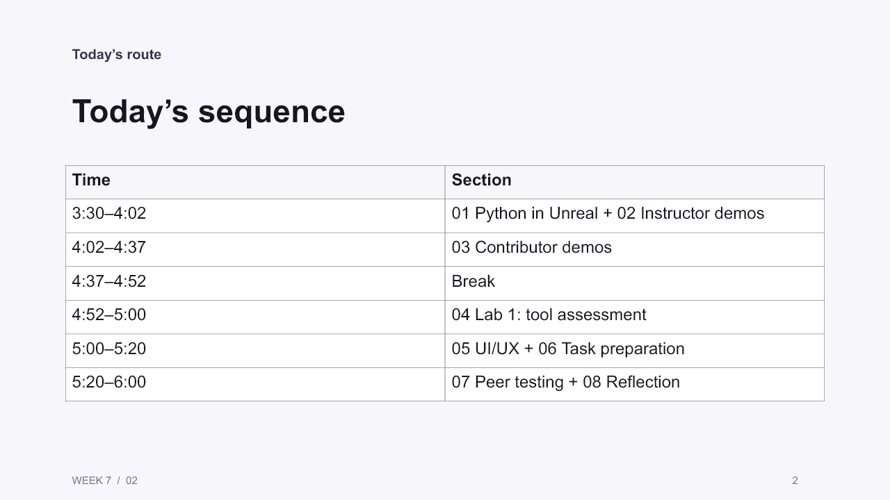
Copyable revised text
Today’s sequence
Time | Section
3:30–4:02 | 01 Python in Unreal + 02 Instructor demos
4:02–4:37 | 03 Contributor demos
4:37–4:52 | Break
4:52–5:00 | 04 Lab 1: tool assessment
5:00–5:20 | 05 UI/UX + 06 Task preparation
5:20–6:00 | 07 Peer testing + 08 Reflection
Editing directions: Keep the exact title. Replace the body with the shown text/table/code. Keep the existing visual assets and crop. Keep the question. Apply the displayed section color and live position.
Teaching rationale: Keep the example within its named topic block and connect it to the next classroom decision.
Read-aloud instructor notes
First we connect Python API calls to the editor and the prepared demos. After our contributors and the break, you will assess a tool, discuss its interface, and test a classmate’s work. We finish by choosing one revision supported by evidence.
Sources and preparation
0.5 minutes. Elapsed 0.25–0.75. Questions and transitions are included. Demo execution uses the prepared tool, not the abbreviated teaching snippets.
3. Python in Unreal
01 Python in Unreal · Stable anchor S1 · 3:30:45–3:31 PM (0.25 min) · Original slide 5
Previous
 Original v3 slide 5, anchor S1
Original v3 slide 5, anchor S1Exact original slide text
SECTION 1 · OPENING / PYTHON · 32 MINUTES
Python in Unreal
WEEK 7
S1
Same language
New host API
A bounded operation
Existing course Unreal project capture
Revised
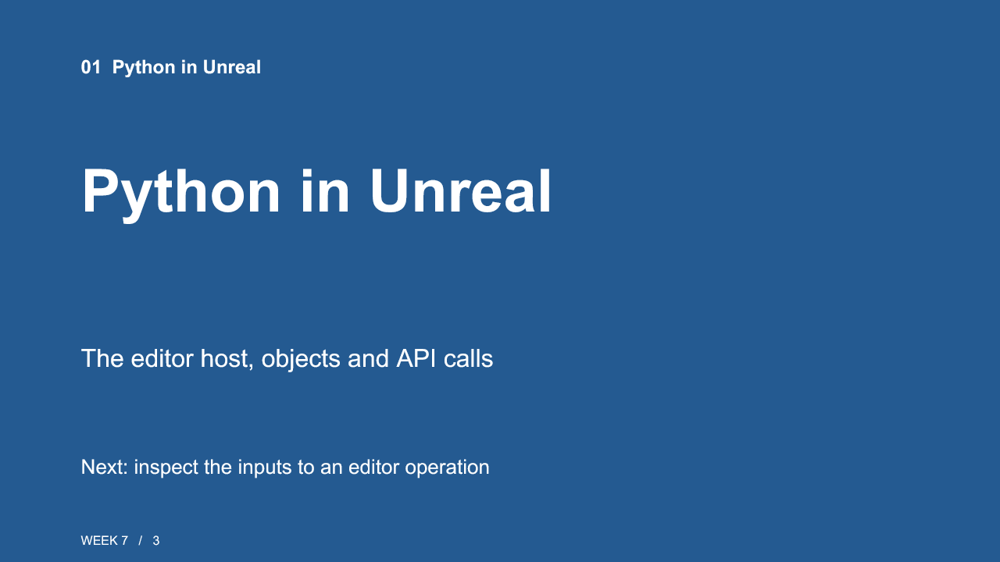
Copyable revised text
Python in Unreal
The editor host, objects and API calls
Next: inspect the inputs to an editor operation
Editing directions: Keep the exact title. Replace the body with the shown text/table/code. Replace or remove the previous visual as shown. Use the revised question shown on the slide. Apply the displayed section color and live position.
Teaching rationale: An unmistakable visual pause announces the next activity. The section name also identifies it without relying on color.
Read-aloud instructor notes
We are beginning python in unreal. The editor host, objects and API calls. Next: inspect the inputs to an editor operation
Sources and preparation
0.25 minutes. Elapsed 0.75–1. Questions and transitions are included. Demo execution uses the prepared tool, not the abbreviated teaching snippets.
4. Python setup in Unreal
01 Python in Unreal · Stable anchor 03 · 3:31–3:32 PM (1 min) · Original slide 7
Previous
 Original v3 slide 7, anchor 03
Original v3 slide 7, anchor 03Exact original slide text
WEEK 7
Python setup in Unreal
WEEK 7
03
Enable project plugins; restart · Output Log → Python input mode
Historical course setup captures · verify placement in the teaching engine
Is the input field running Python or console commands?
Revised
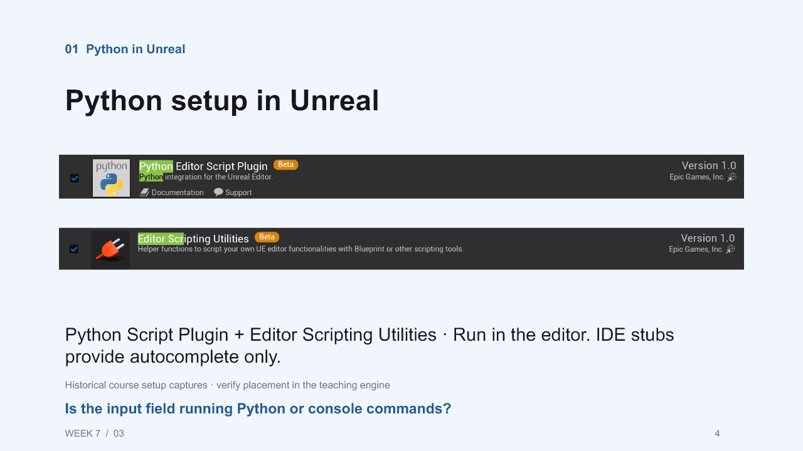
Copyable revised text
Python setup in Unreal
Python Script Plugin + Editor Scripting Utilities
Run in the editor. IDE stubs provide autocomplete only.
Is the input field running Python or console commands?
Editing directions: Keep the exact title. Replace the body with the shown text/table/code. Keep the existing visual assets and crop. Keep the question. Apply the displayed section color and live position.
Teaching rationale: Keep the example within its named topic block and connect it to the next classroom decision.
Read-aloud instructor notes
Unreal supplies the objects and editor operations behind this Python module. Enable the prepared plugins and use Python mode in the Output Log. Autocomplete in an IDE does not provide a running Unreal editor. Which part of the execution setup would you like clarified?
Sources and preparation
1 minutes. Elapsed 1–2. Questions and transitions are included. Demo execution uses the prepared tool, not the abbreviated teaching snippets.
host
5. Executing Python in the editor
01 Python in Unreal · Stable anchor 04 · 3:32–3:33 PM (1 min) · Original slide 8
Previous
 Original v3 slide 8, anchor 04
Original v3 slide 8, anchor 04Exact original slide text
WEEK 7
First execution
WEEK 7
04
import unreal
unreal.log("Hello Unreal")
Output Log: choose Python
Saved file: File > Execute Python Script
What evidence tells you the script ran in the intended project?Revised
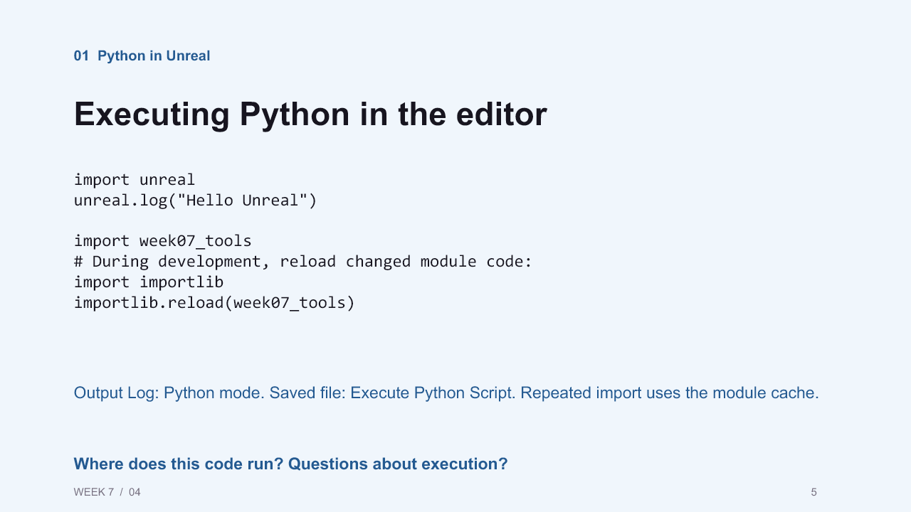
Copyable revised text
Executing Python in the editor
import unreal
unreal.log("Hello Unreal")
import week07_tools
# During development, reload changed module code:
import importlib
importlib.reload(week07_tools)
Output Log: Python mode
Saved file: Execute Python Script
Repeated import uses the module cache.
Where does this code run? Questions about execution?Editing directions: Replace the title with “Executing Python in the editor”. Replace the body with the shown text/table/code. Keep the existing visual assets and crop. Use the revised question shown on the slide. Apply the displayed section color and live position.
Teaching rationale: Students can connect an API call, the object it operates on and the result they should inspect without leaving the slide.
Read-aloud instructor notes
The first two lines check the editor connection. A saved script makes the sequence repeatable. Importing a module twice normally uses the cached module. Reload is a development tool for changed code. Do not repeatedly register menus or callbacks while reloading. What needs clarification?
Sources and preparation
1 minutes. Elapsed 2–3. Questions and transitions are included. Demo execution uses the prepared tool, not the abbreviated teaching snippets.
host
6. Finding an Unreal API call
01 Python in Unreal · Stable anchor 04A · 3:33–3:34 PM (1 min)
Previous
New slide inserted in this revision.
Revised
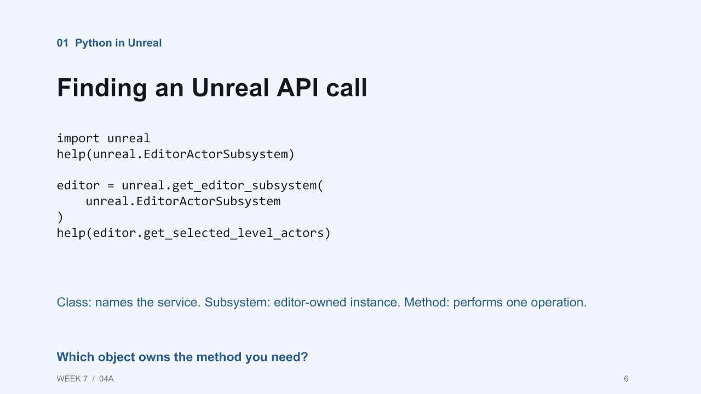
Copyable revised text
Finding an Unreal API call
import unreal
help(unreal.EditorActorSubsystem)
editor = unreal.get_editor_subsystem(
unreal.EditorActorSubsystem
)
help(editor.get_selected_level_actors)
Class: names the service
Subsystem: editor-owned instance
Method: performs one operation
Which object owns the method you need?Editing directions: Insert at the displayed live position. Use the shown title, body and read-aloud notes.
Teaching rationale: Students can connect an API call, the object it operates on and the result they should inspect without leaving the slide.
Read-aloud instructor notes
Find the class, obtain the editor’s subsystem, then inspect the method. Help explains its arguments and returned objects. Use the documentation for our engine version. Karol’s discovery lesson uses help and dir for this same purpose. Which part of a signature needs clarification?
Sources and preparation
1 minutes. Elapsed 3–4. Questions and transitions are included. Demo execution uses the prepared tool, not the abbreviated teaching snippets.
EditorActorSubsystem
host
C:/Users/antho/Downloads/Python.zip
7. Two selections, two API calls
01 Python in Unreal · Stable anchor 07 · 3:34–3:35:30 PM (1.5 min) · Original slide 11
Previous
 Original v3 slide 11, anchor 07
Original v3 slide 11, anchor 07Exact original slide text
WEEK 7
Selection is an input
WEEK 7
07
actors = unreal.get_editor_subsystem(
unreal.EditorActorSubsystem
).get_selected_level_actors()
for actor in actors:
print(actor.get_actor_label())
Read-only API example beside the course Outliner capture
What questions do you have about selection and scope?Revised
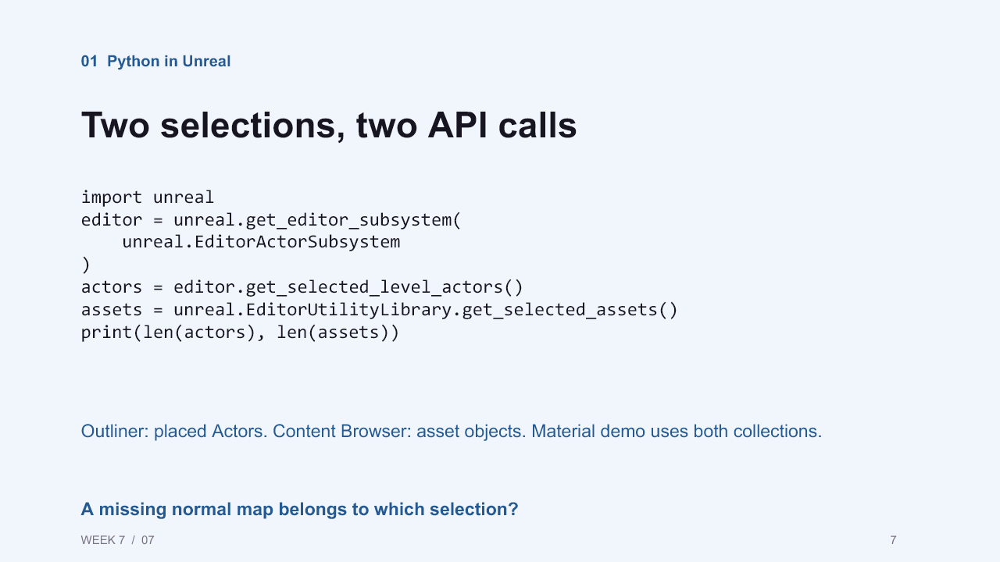
Copyable revised text
Two selections, two API calls
import unreal
editor = unreal.get_editor_subsystem(
unreal.EditorActorSubsystem
)
actors = editor.get_selected_level_actors()
assets = unreal.EditorUtilityLibrary.get_selected_assets()
print(len(actors), len(assets))
Outliner: placed Actors
Content Browser: asset objects
Material demo uses both collections.
A missing normal map belongs to which selection?Editing directions: Replace the title with “Two selections, two API calls”. Replace the body with the shown text/table/code. Replace or remove the previous visual as shown. Use the revised question shown on the slide. Apply the displayed section color and live position.
Teaching rationale: Students can connect an API call, the object it operates on and the result they should inspect without leaving the slide.
Read-aloud instructor notes
The level selection gives us target placements. The Content Browser selection supplies texture assets. The objects are already loaded. Reading a selection does not modify it. Which input would you inspect if the material tool reported a missing normal map? What questions do you have about these two collections?
Sources and preparation
1.5 minutes. Elapsed 4–5.5. Questions and transitions are included. Demo execution uses the prepared tool, not the abbreviated teaching snippets.
EditorActorSubsystem
EditorUtilityLibrary
Week07UnrealPython/Content/Python/week07_tooling/examples/e02_inspect_selection.py
8. Actor, component and shared mesh
01 Python in Unreal · Stable anchor 07C · 3:35:30–3:37 PM (1.5 min)
Previous
New slide inserted in this revision.
Revised
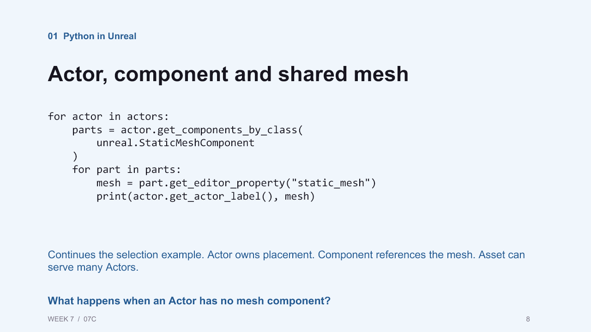
Copyable revised text
Actor, component and shared mesh
for actor in actors:
parts = actor.get_components_by_class(
unreal.StaticMeshComponent
)
for part in parts:
mesh = part.get_editor_property("static_mesh")
print(actor.get_actor_label(), mesh)
Continues the selection example
Actor owns placement.
Component references the mesh.
Asset can serve many Actors.
What happens when an Actor has no mesh component?Editing directions: Insert at the displayed live position. Use the shown title, body and read-aloud notes.
Teaching rationale: Students can connect an API call, the object it operates on and the result they should inspect without leaving the slide.
Read-aloud instructor notes
Continue with the selected actors. An actor may have zero, one, or several mesh components, so we inspect the collection. The static_mesh property references the shared asset. The current Material Setup tool deliberately accepts only its supported component and slot configuration.
Sources and preparation
1.5 minutes. Elapsed 5.5–7. Questions and transitions are included. Demo execution uses the prepared tool, not the abbreviated teaching snippets.
StaticMeshComponent
Object
C:/Users/antho/Downloads/Python.zip
9. Shared asset, separate placements
01 Python in Unreal · Stable anchor 06A · 3:37–3:38:30 PM (1.5 min) · Original slide 10
Previous
 Original v3 slide 10, anchor 06A
Original v3 slide 10, anchor 06AExact original slide text
WEEK 7
Shared asset, separate placements
WEEK 7
06A
Conceptual relationship · the mesh asset can have multiple references
Where would you make a change that affects only Actor A?
Revised
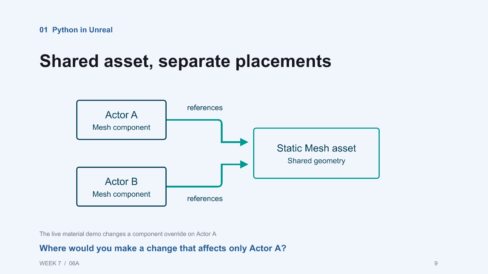
Copyable revised text
Shared asset, separate placements
Where would you make a change that affects only Actor A?
Editing directions: Keep the exact title. Keep the body text/table/code. Keep the existing visual assets and crop. Keep the question. Apply the displayed section color and live position.
Teaching rationale: Keep the example within its named topic block and connect it to the next classroom decision.
Read-aloud instructor notes
Both placements reference one mesh. Changing the shared mesh affects its uses. Our material demo changes only one actor component’s override. Point to the scope you would choose to preserve Actor B. What questions do you have about assets and placements?
Sources and preparation
1.5 minutes. Elapsed 7–8.5. Questions and transitions are included. Demo execution uses the prepared tool, not the abbreviated teaching snippets.
python
10. Disk paths and Unreal asset paths
01 Python in Unreal · Stable anchor 07A · 3:38:30–3:39:30 PM (1 min) · Original slide 12
Previous
 Original v3 slide 12, anchor 07A
Original v3 slide 12, anchor 07AExact original slide text
WEEK 7
Disk paths and Unreal asset paths
WEEK 7
07A
Kind
Illustrative example
Used for
Disk file
C:/Exports/Crate.fbx
Input to an importer
Content folder
/Game/Props
Destination package folder
Object path
/Game/Props/Crate.Crate
A particular Unreal object
Which path belongs in the source-file field?
Revised
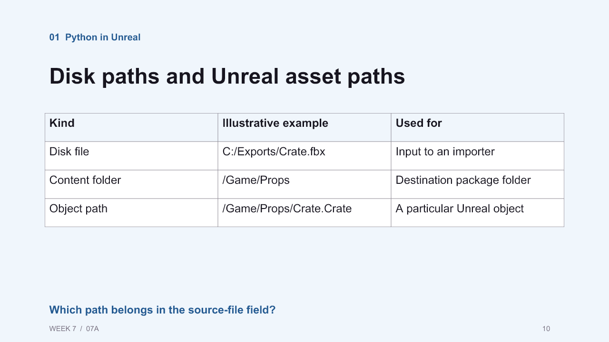
Copyable revised text
Disk paths and Unreal asset paths
Kind | Illustrative example | Used for
Disk file | C:/Exports/Crate.fbx | Input to an importer
Content folder | /Game/Props | Destination package folder
Object path | /Game/Props/Crate.Crate | A particular Unreal object
Which path belongs in the source-file field?
Editing directions: Keep the exact title. Keep the body text/table/code. Keep the existing visual assets and crop. Keep the question. Apply the displayed section color and live position.
Teaching rationale: Keep the example within its named topic block and connect it to the next classroom decision.
Read-aloud instructor notes
These are illustrative paths, not files supplied with this slide. Keep the source file, destination folder, and imported object identity distinct. An import task takes a filename and a destination path. Read its resulting object paths to learn what was actually created.
Sources and preparation
1 minutes. Elapsed 8.5–9.5. Questions and transitions are included. Demo execution uses the prepared tool, not the abbreviated teaching snippets.
import
oster
11. Instructor demos
02 Instructor demos · Stable anchor S1A · 3:39:30–3:39:45 PM (0.25 min)
Previous
New slide inserted in this revision.
Revised
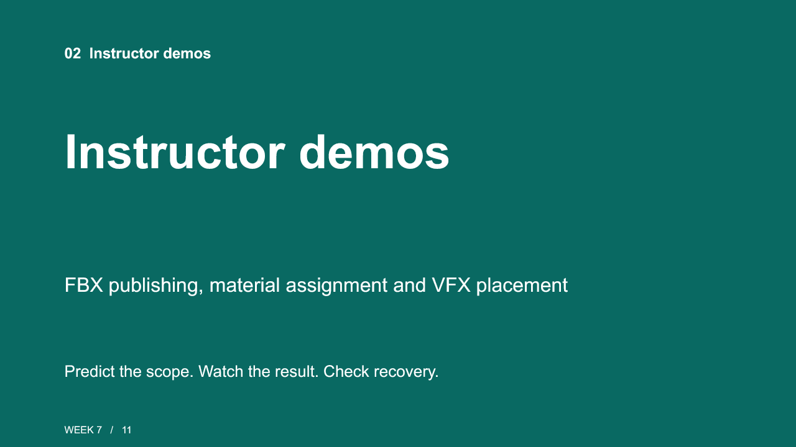
Copyable revised text
Instructor demos
FBX publishing, material assignment and VFX placement
Predict the scope. Watch the result. Check recovery.
Editing directions: Insert at the displayed live position. Use the shown title, body and read-aloud notes.
Teaching rationale: An unmistakable visual pause announces the next activity. The section name also identifies it without relying on color.
Read-aloud instructor notes
We now use those API ideas in our prepared tools. Predict which objects may change before each operation. Watch the result and the recovery separately.
Sources and preparation
0.25 minutes. Elapsed 9.5–9.75. Questions and transitions are included. Demo execution uses the prepared tool, not the abbreviated teaching snippets.
12. Maya and Blender publishing
02 Instructor demos · Stable anchor 10 · 3:39:45–3:40:45 PM (1 min) · Original slide 13
Previous
 Original v3 slide 13, anchor 10
Original v3 slide 13, anchor 10Exact original slide text
WEEK 7
Maya and Unreal handoff
WEEK 7
10
Course schematic · file exchange and revision loop
What must remain stable when the Maya source changes?
Revised
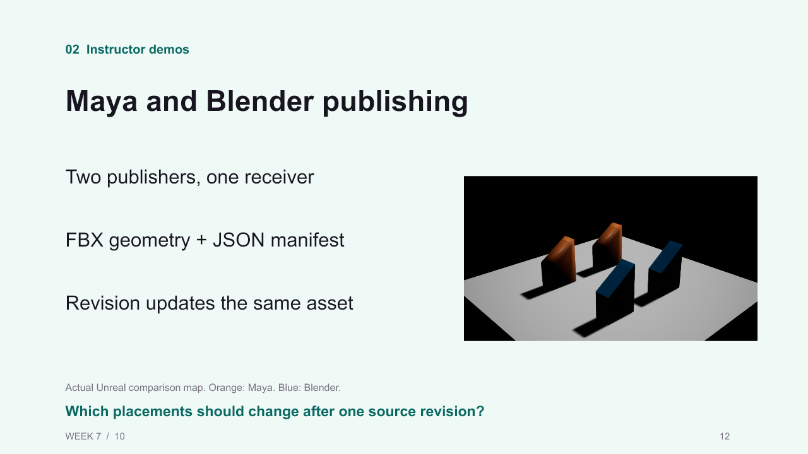
Copyable revised text
Maya and Blender publishing
Two publishers, one receiver
FBX geometry + JSON manifest
Revision updates the same asset
Which placements should change after one source revision?
Editing directions: Replace the title with “Maya and Blender publishing”. Replace the body with the shown text/table/code. Replace or remove the previous visual as shown. Use the revised question shown on the slide. Apply the displayed section color and live position.
Teaching rationale: Keep the example within its named topic block and connect it to the next classroom decision.
Read-aloud instructor notes
The two hosts publish the same contract: an FBX file and a manifest. Unreal checks and imports the revision. Each colored pair references one shared mesh. Our prepared revision raises the roof from 180 to 220 centimeters. Predict which pair will update and which transforms should stay the same. This bridge handles one static mesh and explicit publishing. It does not stream rigging or animation.
Sources and preparation
1 minutes. Elapsed 9.75–10.75. Questions and transitions are included. Demo execution uses the prepared tool, not the abbreviated teaching snippets.
oster
import
Week07UnrealPython/Docs/Bridge/README.md
Week07UnrealPython/Docs/Bridge/verification.json
13. An import task describes one job
02 Instructor demos · Stable anchor 10A · 3:40:45–3:41:45 PM (1 min) · Original slide 14
Previous
 Original v3 slide 14, anchor 10A
Original v3 slide 14, anchor 10AExact original slide text
WEEK 7
Explicit import settings
WEEK 7
10A
task = unreal.AssetImportTask()
task.filename = source_file
task.destination_path = "/Game/Props"
task.automated = True
task.save = False
tools = unreal.AssetToolsHelpers.get_asset_tools()
tools.import_asset_tasks([task])
Configure options for the chosen importer
Inspect imported_object_paths and the result
What should happen when the destination already exists?
Revised
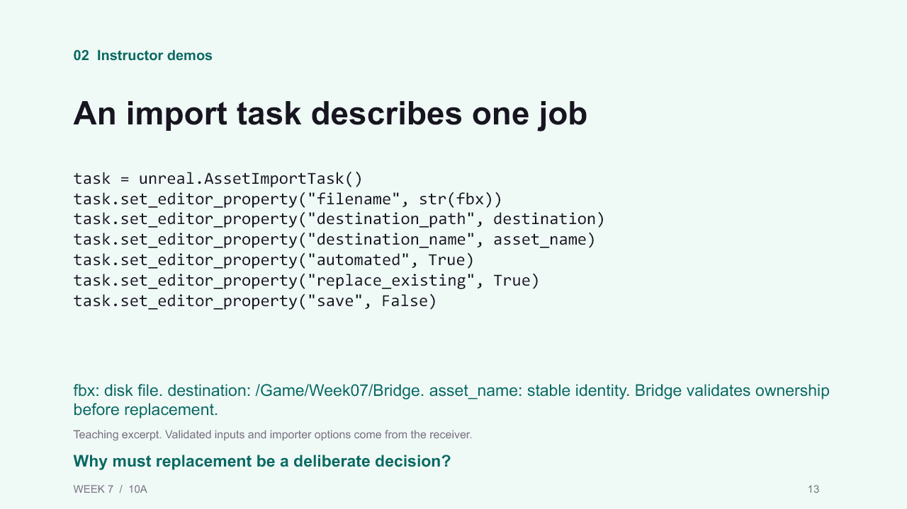
Copyable revised text
An import task describes one job
task = unreal.AssetImportTask()
task.set_editor_property("filename", str(fbx))
task.set_editor_property("destination_path", destination)
task.set_editor_property("destination_name", asset_name)
task.set_editor_property("automated", True)
task.set_editor_property("replace_existing", True)
task.set_editor_property("save", False)
fbx: disk file
destination: /Game/Week07/Bridge
asset_name: stable identity
Bridge validates ownership before replacement.
Why must replacement be a deliberate decision?Editing directions: Replace the title with “An import task describes one job”. Replace the body with the shown text/table/code. Keep the existing visual assets and crop. Use the revised question shown on the slide. Apply the displayed section color and live position.
Teaching rationale: Students can connect an API call, the object it operates on and the result they should inspect without leaving the slide.
Read-aloud instructor notes
An import task describes the job before the editor runs it. The disk filename and Unreal destination are different kinds of paths. The destination name stays stable across revisions. The receiver validates its ownership tag before allowing replacement. This excerpt assumes the receiver already validated those inputs. Saving happens only after the receiver checks the imported result.
Sources and preparation
1 minutes. Elapsed 10.75–11.75. Questions and transitions are included. Demo execution uses the prepared tool, not the abbreviated teaching snippets.
AssetImportTask
Week07UnrealPython/Content/Python/week07_bridge/unreal_receiver.py
14. Importer options and returned paths
02 Instructor demos · Stable anchor 10C · 3:41:45–3:42:30 PM (0.75 min)
Previous
New slide inserted in this revision.
Revised
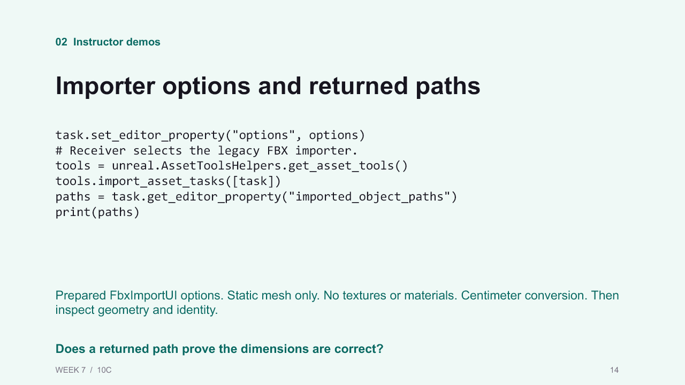
Copyable revised text
Importer options and returned paths
task.set_editor_property("options", options)
# Receiver selects the legacy FBX importer.
tools = unreal.AssetToolsHelpers.get_asset_tools()
tools.import_asset_tasks([task])
paths = task.get_editor_property("imported_object_paths")
print(paths)
Prepared FbxImportUI options:
Static mesh only
No textures or materials
Centimeter conversion
Then inspect geometry and identity.
Does a returned path prove the dimensions are correct?Editing directions: Insert at the displayed live position. Use the shown title, body and read-aloud notes.
Teaching rationale: Students can connect an API call, the object it operates on and the result they should inspect without leaving the slide.
Read-aloud instructor notes
The receiver constructs FbxImportUI settings and pins the legacy FBX importer for this lesson, restoring the previous flag afterward. Importer choice matters because Interchange does not use every legacy setting the same way. The result paths tell us what the importer produced. We still verify class, dimensions, asset identity and assignments before saving. Ask about any option you want clarified.
Sources and preparation
0.75 minutes. Elapsed 11.75–12.5. Questions and transitions are included. Demo execution uses the prepared tool, not the abbreviated teaching snippets.
AssetImportTask
FbxImportUI
Week07UnrealPython/Content/Python/week07_bridge/unreal_receiver.py
15. Bridge demo: publish, revise, verify
02 Instructor demos · Stable anchor 10D · 3:42:30–3:46:30 PM (4 min)
Previous
New slide inserted in this revision.
Revised
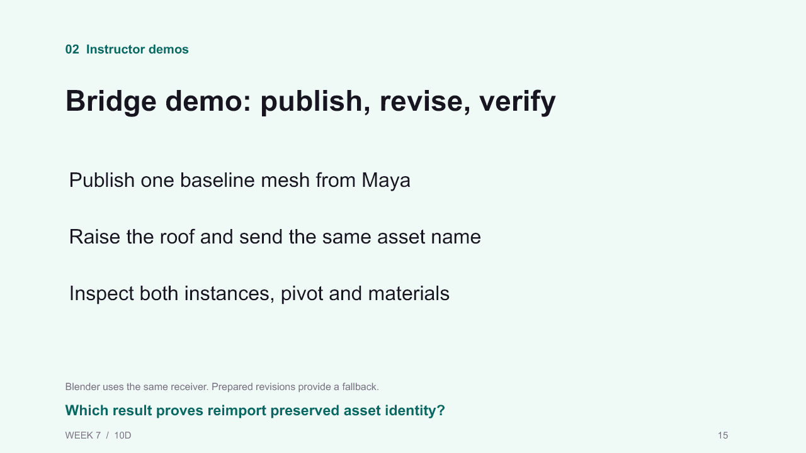
Copyable revised text
Bridge demo: publish, revise, verify
Publish one baseline mesh from Maya
Raise the roof and send the same asset name
Inspect both instances, pivot and materials
Which result proves reimport preserved asset identity?
Editing directions: Insert at the displayed live position. Use the shown title, body and read-aloud notes.
Teaching rationale: Keep the example within its named topic block and connect it to the next classroom decision.
Read-aloud instructor notes
Watch the Maya publisher send this baseline. Now I publish the prepared revision under the same name. The two Maya instances update, while their placement remains intact. We inspect the pivot, dimensions and material assignments. Blender changes its adapter calls but uses this same receiver. If acknowledgement fails, we inspect the response before resending. Recovery is republishing a known revision, not assuming Undo reverses the import.
Sources and preparation
4 minutes. Elapsed 12.5–16.5. Questions and transitions are included. Demo execution uses the prepared tool, not the abbreviated teaching snippets.
Week07UnrealPython/Docs/Bridge/README.md
Week07UnrealPython/Docs/Bridge/verification.json
16. Texture properties: inspect before editing
02 Instructor demos · Stable anchor 09G · 3:46:30–3:47:30 PM (1 min)
Previous
New slide inserted in this revision.
Revised
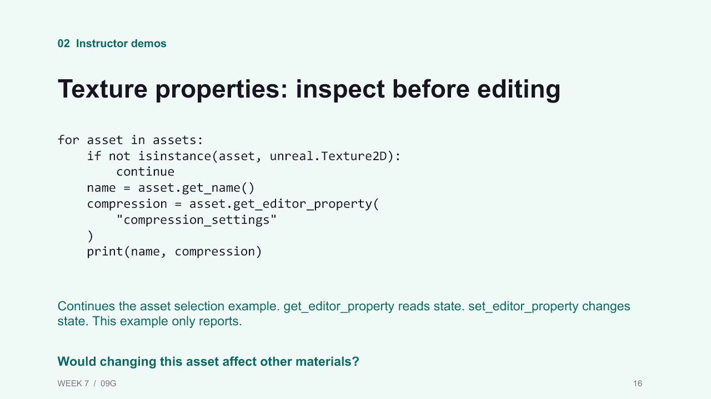
Copyable revised text
Texture properties: inspect before editing
for asset in assets:
if not isinstance(asset, unreal.Texture2D):
continue
name = asset.get_name()
compression = asset.get_editor_property(
"compression_settings"
)
print(name, compression)
Continues the asset selection example
get_editor_property reads state.
set_editor_property changes state.
This example only reports.
Would changing this asset affect other materials?Editing directions: Insert at the displayed live position. Use the shown title, body and read-aloud notes.
Teaching rationale: Students can connect an API call, the object it operates on and the result they should inspect without leaving the slide.
Read-aloud instructor notes
Karol’s texture compression tool connects naming rules to editor properties. Here we use the selected assets and report the current setting. Texture assets may be shared by many materials. A report is useful before deciding whether any repair is appropriate. What questions do you have about property access?
Sources and preparation
1 minutes. Elapsed 16.5–17.5. Questions and transitions are included. Demo execution uses the prepared tool, not the abbreviated teaching snippets.
Object
Texture
C:/Users/antho/Downloads/Python.zip
17. A small texture validation report
02 Instructor demos · Stable anchor 09H · 3:47:30–3:48:30 PM (1 min)
Previous
New slide inserted in this revision.
Revised
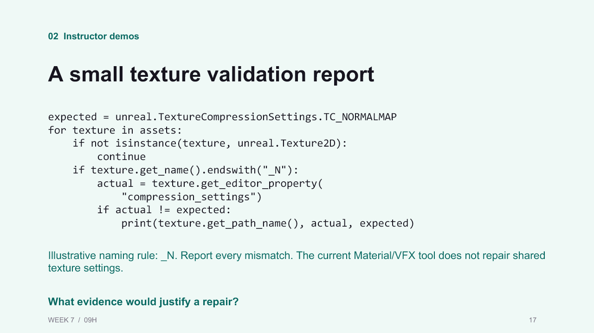
Copyable revised text
A small texture validation report
expected = unreal.TextureCompressionSettings.TC_NORMALMAP
for texture in assets:
if not isinstance(texture, unreal.Texture2D):
continue
if texture.get_name().endswith("_N"):
actual = texture.get_editor_property(
"compression_settings")
if actual != expected:
print(texture.get_path_name(), actual, expected)
Illustrative naming rule: _N
Report every mismatch.
The current Material/VFX tool does not repair shared texture settings.
What evidence would justify a repair?Editing directions: Insert at the displayed live position. Use the shown title, body and read-aloud notes.
Teaching rationale: Students can connect an API call, the object it operates on and the result they should inspect without leaving the slide.
Read-aloud instructor notes
This rule assumes our project uses the suffix N for normal maps. Naming alone does not establish what an image contains. We report every matching mismatch so an artist can review it. This is a teaching example, not a new button in the current tool. A future report could reuse the same rules in both interfaces.
Sources and preparation
1 minutes. Elapsed 17.5–18.5. Questions and transitions are included. Demo execution uses the prepared tool, not the abbreviated teaching snippets.
Texture
Object
C:/Users/antho/Downloads/Python.zip
18. Component assignment and Undo
02 Instructor demos · Stable anchor 09I · 3:48:30–3:49:30 PM (1 min)
Previous
New slide inserted in this revision.
Revised
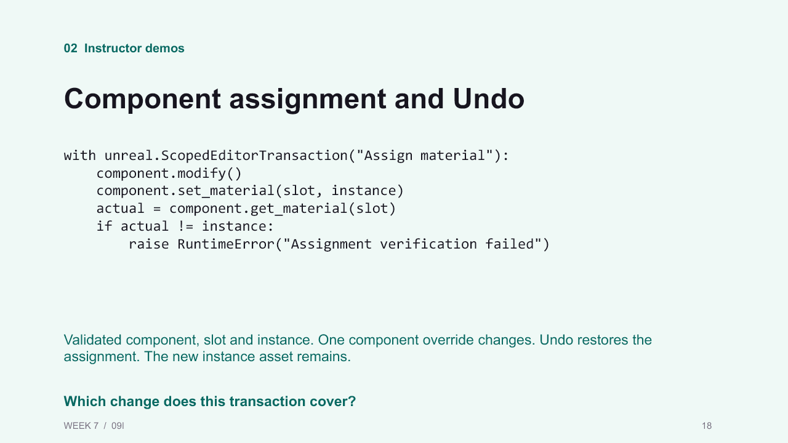
Copyable revised text
Component assignment and Undo
with unreal.ScopedEditorTransaction("Assign material"):
component.modify()
component.set_material(slot, instance)
actual = component.get_material(slot)
if actual != instance:
raise RuntimeError("Assignment verification failed")
Validated component, slot and instance
One component override changes.
Undo restores the assignment.
The new instance asset remains.
Which change does this transaction cover?Editing directions: Insert at the displayed live position. Use the shown title, body and read-aloud notes.
Teaching rationale: Students can connect an API call, the object it operates on and the result they should inspect without leaving the slide.
Read-aloud instructor notes
This excerpt begins after validation and instance creation. Modify records the component for the editor transaction. Set material changes this component’s slot, and get material reads it back. An exception is not a promise of automatic rollback. The full tool restores assignments on failure and reports the draft asset separately. In our recorded rehearsal, Undo restored the assignment and retained the newly created instance.
Sources and preparation
1 minutes. Elapsed 18.5–19.5. Questions and transitions are included. Demo execution uses the prepared tool, not the abbreviated teaching snippets.
ScopedEditorTransaction
StaticMeshComponent
Week07UnrealPython/Content/Python/week07_tooling/editor/workflow_backend.py
Course/Slides/Week07/FinalClass20261013/live-captures/rehearsal.json
19. Material Setup: a reviewed change
02 Instructor demos · Stable anchor 09 · 3:49:30–3:53:30 PM (4 min) · Original slide 15
Previous
 Original v3 slide 15, anchor 09
Original v3 slide 15, anchor 09Exact original slide text
WEEK 7
Material Setup: a reviewed change
WEEK 7
09
One new material instance
Only the target cube changes
Undo restores the assignment
Actual Unreal 5.7.4 result from the current tool
What changes? What must stay unchanged?
Revised
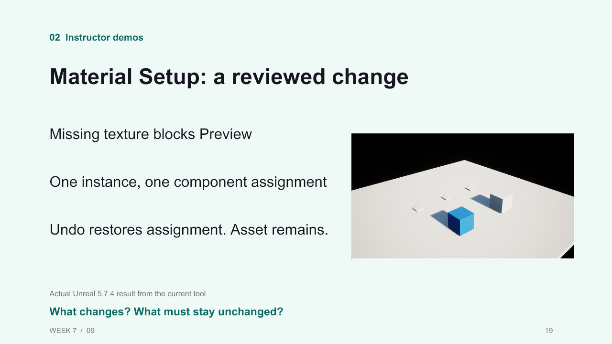
Copyable revised text
Material Setup: a reviewed change
Missing texture blocks Preview
One instance, one component assignment
Undo restores assignment. Asset remains.
What changes? What must stay unchanged?
Editing directions: Keep the exact title. Replace the body with the shown text/table/code. Keep the existing visual assets and crop. Keep the question. Apply the displayed section color and live position.
Teaching rationale: Keep the example within its named topic block and connect it to the next classroom decision.
Read-aloud instructor notes
First I leave one texture out. Preview blocks the operation before changing the scene. I restore the complete texture selection and preview again. Read the target, slot and texture mapping. Apply changes the target cube while the other cube and shared mesh stay unchanged. Undo restores the assignment. The new material instance remains for separate cleanup. What questions do you have about the result and recovery?
Sources and preparation
4 minutes. Elapsed 19.5–23.5. Questions and transitions are included. Demo execution uses the prepared tool, not the abbreviated teaching snippets.
Course/Slides/Week07/FinalClass20261013/live-demo.html
Course/Slides/Week07/FinalClass20261013/Documents/Week 7 Live Demo Run Sheet.docx
20. Apply rechecks the reviewed inputs
02 Instructor demos · Stable anchor 09F · 3:53:30–3:54:15 PM (0.75 min) · Original slide 16
Previous
 Original v3 slide 16, anchor 09F
Original v3 slide 16, anchor 09FExact original slide text
WEEK 7
The backend checks the promise
WEEK 7
09F
current = preview()
if plan != current:
raise RuntimeError(
"Preview is stale or edited. "
"Run preview() again and review it."
)
demo.py · actual guard excerpt; message wrapped for the slideRevised
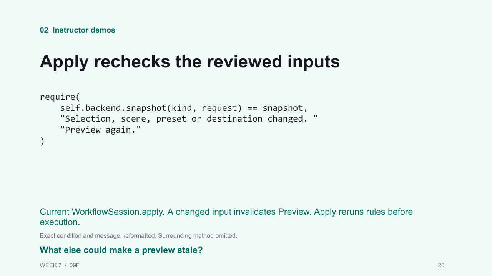
Copyable revised text
Apply rechecks the reviewed inputs
require(
self.backend.snapshot(kind, request) == snapshot,
"Selection, scene, preset or destination changed. "
"Preview again."
)
Current WorkflowSession.apply
A changed input invalidates Preview.
Apply reruns rules before execution.
What else could make a preview stale?Editing directions: Replace the title with “Apply rechecks the reviewed inputs”. Replace the body with the shown text/table/code. Replace or remove the previous visual as shown. Use the revised question shown on the slide. Apply the displayed section color and live position.
Teaching rationale: Students can connect an API call, the object it operates on and the result they should inspect without leaving the slide.
Read-aloud instructor notes
This is the current session’s check. A preview records a particular input state. Apply compares it with a fresh snapshot and reruns the rules. The UI’s enabled button cannot replace this check. What could change between your preview and your click?
Sources and preparation
0.75 minutes. Elapsed 23.5–24.25. Questions and transitions are included. Demo execution uses the prepared tool, not the abbreviated teaching snippets.
python
Week07UnrealPython/Content/Python/week07_tooling/workflows.py
21. Two interfaces, one Python workflow
02 Instructor demos · Stable anchor 08A · 3:54:15–3:55:30 PM (1.25 min) · Original slide 18
Previous
 Original v3 slide 18, anchor 08A
Original v3 slide 18, anchor 08AExact original slide text
WEEK 7
One operation, multiple interfaces
WEEK 7
08A
Course architecture sketch · alternate UI entry points
Which logic should survive a complete UI redesign?
Revised
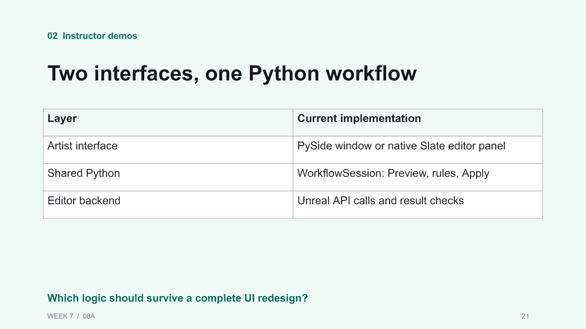
Copyable revised text
Two interfaces, one Python workflow
Layer | Current implementation
Artist interface | PySide window or native Slate editor panel
Shared Python | WorkflowSession: Preview, rules, Apply
Editor backend | Unreal API calls and result checks
Which logic should survive a complete UI redesign?
Editing directions: Replace the title with “Two interfaces, one Python workflow”. Replace the body with the shown text/table/code. Replace or remove the previous visual as shown. Keep the question. Apply the displayed section color and live position.
Teaching rationale: Keep the example within its named topic block and connect it to the next classroom decision.
Read-aloud instructor notes
The current native Unreal panel uses Slate. The other interface uses PySide. Both call the same Python workflow. An Editor Utility Blueprint is another possible entry point, but it is not the implementation of our current panel. Which rules should remain unchanged if we redesign the interface?
Sources and preparation
1.25 minutes. Elapsed 24.25–25.5. Questions and transitions are included. Demo execution uses the prepared tool, not the abbreviated teaching snippets.
python
euw
qt
Week07UnrealPython/Content/Python/week07_tooling/workflows.py
Week07UnrealPython/Docs/UI/UNREAL_NATIVE_UI.md
22. VFX placement uses Actors and components
02 Instructor demos · Stable anchor 09J · 3:55:30–3:56:30 PM (1 min)
Previous
New slide inserted in this revision.
Revised
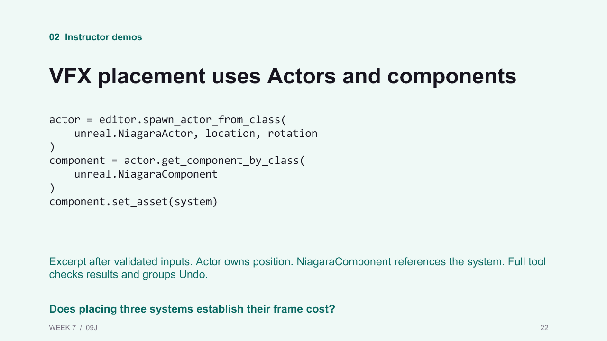
Copyable revised text
VFX placement uses Actors and components
actor = editor.spawn_actor_from_class(
unreal.NiagaraActor, location, rotation
)
component = actor.get_component_by_class(
unreal.NiagaraComponent
)
component.set_asset(system)
Excerpt after validated inputs
Actor owns position.
NiagaraComponent references the system.
Full tool checks results and groups Undo.
Does placing three systems establish their frame cost?Editing directions: Insert at the displayed live position. Use the shown title, body and read-aloud notes.
Teaching rationale: Students can connect an API call, the object it operates on and the result they should inspect without leaving the slide.
Read-aloud instructor notes
Our VFX backend spawns an actor at each reviewed anchor and assigns the prepared Niagara system to its component. These lines omit null checks, tagging, verification and recovery that the complete tool performs. Three successful placements tell us where the effects are. We still need target-hardware measurements to discuss performance.
Sources and preparation
1 minutes. Elapsed 25.5–26.5. Questions and transitions are included. Demo execution uses the prepared tool, not the abbreviated teaching snippets.
EditorActorSubsystem
NiagaraComponent
Week07UnrealPython/Content/Python/week07_tooling/editor/workflow_backend.py
23. VFX Placement: transfer the workflow
02 Instructor demos · Stable anchor 09D · 3:56:30–4:00:30 PM (4 min) · Original slide 21
Previous
 Original v3 slide 21, anchor 09D
Original v3 slide 21, anchor 09DExact original slide text
WEEK 7
VFX Placement: transfer the workflow
WEEK 7
09D
Three markers, three effects
Repeated placement is blocked
Undo removes this batch
Actual Unreal result with the reviewed classroom fountain
Do these checks establish frame cost? What questions remain?
Revised
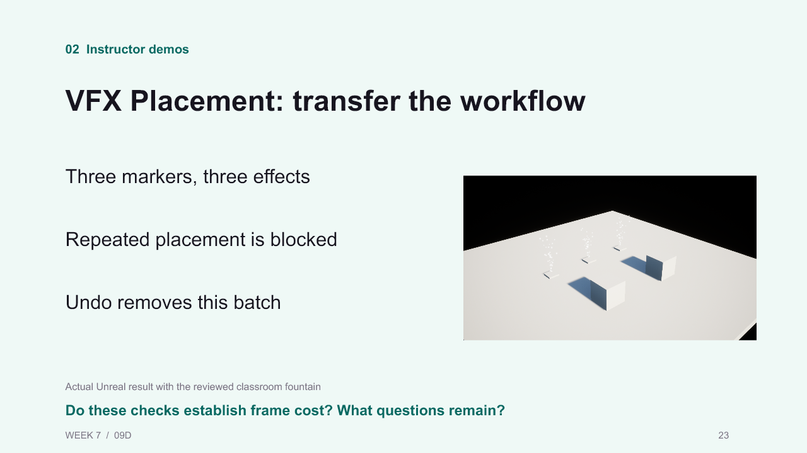
Copyable revised text
VFX Placement: transfer the workflow
Three markers, three effects
Repeated placement is blocked
Undo removes this batch
Do these checks establish frame cost? What questions remain?
Editing directions: Keep the exact title. Keep the body text/table/code. Keep the existing visual assets and crop. Keep the question. Apply the displayed section color and live position.
Teaching rationale: Keep the example within its named topic block and connect it to the next classroom decision.
Read-aloud instructor notes
The three tagged markers define this placement. We choose VFX Placement, scale one, and Preview. The plan names three effects and their positions. Apply creates three visible fountains. Previewing these occupied anchors again blocks a second batch. Undo removes the placed effects and leaves the pedestals. These checks establish placement behavior and recovery in this fixture. They do not measure frame cost on target hardware. What questions remain about performance or wider production use?
Sources and preparation
4 minutes. Elapsed 26.5–30.5. Questions and transitions are included. Demo execution uses the prepared tool, not the abbreviated teaching snippets.
Course/Slides/Week07/FinalClass20261013/live-demo.html
Course/Slides/Week07/FinalClass20261013/Documents/Week 7 Live Demo Run Sheet.docx
24. Python and demo questions
02 Instructor demos · Stable anchor 09K · 4:00:30–4:02 PM (1.5 min)
Previous
New slide inserted in this revision.
Revised
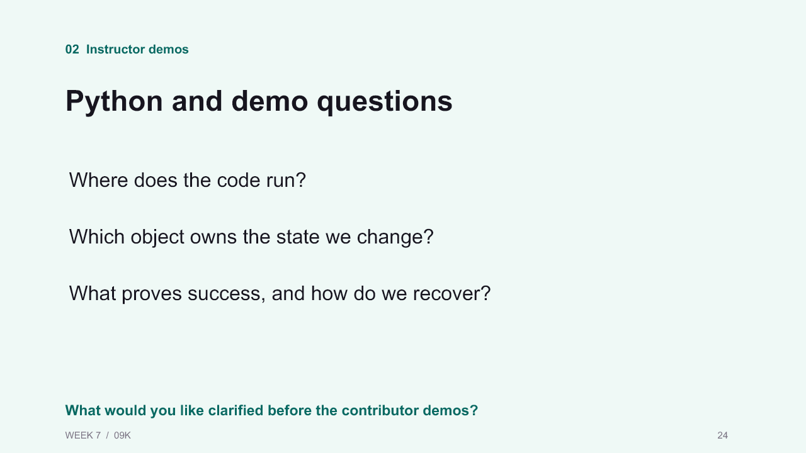
Copyable revised text
Python and demo questions
Where does the code run?
Which object owns the state we change?
What proves success, and how do we recover?
What would you like clarified before the contributor demos?
Editing directions: Insert at the displayed live position. Use the shown title, body and read-aloud notes.
Teaching rationale: Keep the example within its named topic block and connect it to the next classroom decision.
Read-aloud instructor notes
We have seen the same language call different host APIs. Connect the object, the operation and the evidence. What would you like clarified before our contributors show their tools?
Sources and preparation
1.5 minutes. Elapsed 30.5–32. Questions and transitions are included. Demo execution uses the prepared tool, not the abbreviated teaching snippets.
25. Contributor demos
03 Contributor demos · Stable anchor 11 · 4:02–4:37 PM (35 min) · Original slide 22
Previous
 Original v3 slide 22, anchor 11
Original v3 slide 22, anchor 11Exact original slide text
SECTION 2 · 35 MINUTES
Tool demonstrations
WEEK 7
11
Co-teacher · 15 minutes
TA · 20 minutes
Task → scope → result → recovery
Course material-tool prototype · offline data
Where does the artist make a decision?
Revised
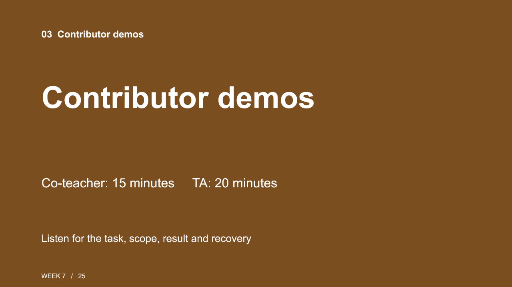
Copyable revised text
Contributor demos
Co-teacher: 15 minutes TA: 20 minutes
Listen for the task, scope, result and recovery
Editing directions: Replace the title with “Contributor demos”. Replace the body with the shown text/table/code. Replace or remove the previous visual as shown. Use the revised question shown on the slide. Apply the displayed section color and live position.
Teaching rationale: An unmistakable visual pause announces the next activity. The section name also identifies it without relying on color.
Read-aloud instructor notes
We are beginning contributor demos. Co-teacher: 15 minutes TA: 20 minutes. Listen for the task, scope, result and recovery
Sources and preparation
35 minutes. Elapsed 32–67. Questions and transitions are included. Demo execution uses the prepared tool, not the abbreviated teaching snippets.
Course/Slides/Week07/ActivitiesDraft20261012/index.html
26. Break
Break · Stable anchor 13 · 4:37–4:52 PM (15 min) · Original slide 23
Previous
 Original v3 slide 23, anchor 13
Original v3 slide 23, anchor 13Exact original slide text
WEEK 7
Break
WEEK 7
13
When we return: assess a tool
Then revisit your assessment through UI/UX
Apply the same thinking in peer testing
Revised
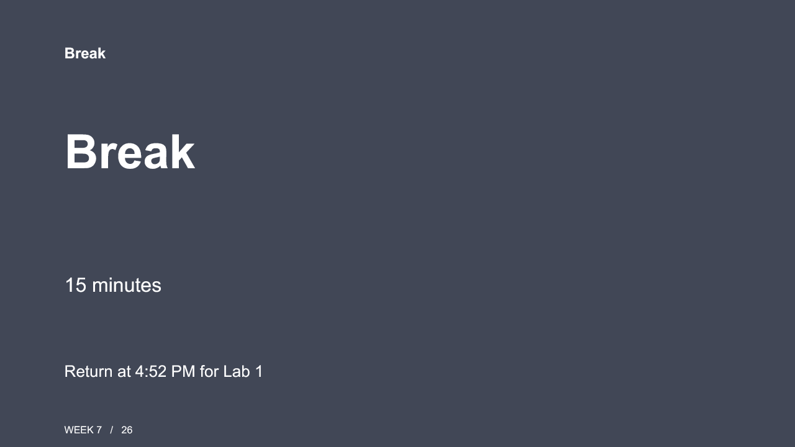
Copyable revised text
Break
15 minutes
Return at 4:52 PM for Lab 1
Editing directions: Keep the exact title. Replace the body with the shown text/table/code. Keep the existing visual assets and crop. Use the revised question shown on the slide. Apply the displayed section color and live position.
Teaching rationale: An unmistakable visual pause announces the next activity. The section name also identifies it without relying on color.
Read-aloud instructor notes
We are beginning break. 15 minutes. Return at 4:52 PM for Lab 1
Sources and preparation
15 minutes. Elapsed 67–82. Questions and transitions are included. Demo execution uses the prepared tool, not the abbreviated teaching snippets.
Course/Slides/Week07/ActivitiesDraft20261012/index.html
27. Lab 1 Tool assessment
04 Lab 1: tool assessment · Stable anchor S3 · 4:52–4:52:15 PM (0.25 min) · Original slide 24
Previous
 Original v3 slide 24, anchor S3
Original v3 slide 24, anchor S3Exact original slide text
SECTION 3 · 8 MINUTES
Tool assessment
WEEK 7
S3
Predict the result
Compare the evidence
Keep your first judgment
Course practice interface · offline sample data
Revised
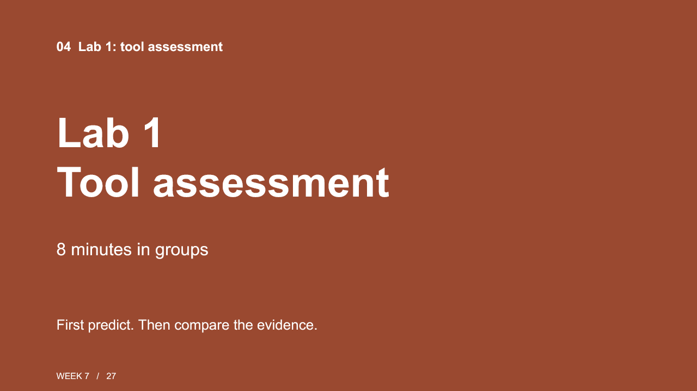
Copyable revised text
Lab 1
Tool assessment
8 minutes in groups
First predict. Then compare the evidence.
Editing directions: Replace the title with “Lab 1 Tool assessment”. Replace the body with the shown text/table/code. Replace or remove the previous visual as shown. Use the revised question shown on the slide. Apply the displayed section color and live position.
Teaching rationale: An unmistakable visual pause announces the next activity. The section name also identifies it without relying on color.
Read-aloud instructor notes
We are beginning lab 1
tool assessment. 8 minutes in groups. First predict. Then compare the evidence.
Sources and preparation
0.25 minutes. Elapsed 82–82.25. Questions and transitions are included. Demo execution uses the prepared tool, not the abbreviated teaching snippets.
28. Lab 1: predict the result
04 Lab 1: tool assessment · Stable anchor 12 · 4:52:15–4:57 PM (4.75 min) · Original slide 25
Previous
 Original v3 slide 25, anchor 12
Original v3 slide 25, anchor 12Exact original slide text
GROUP LAB · 8 MINUTES
Lab 1: predict the result
WEEK 7
12
Starting name
Selected?
Expected name
crate_A
Yes
?
crate_B
Yes
?
SM_crate_C
Yes
?
barrel_D
No
?
Rule: exactly one SM_ prefix on selected assets. Leave all others unchanged.
Revised
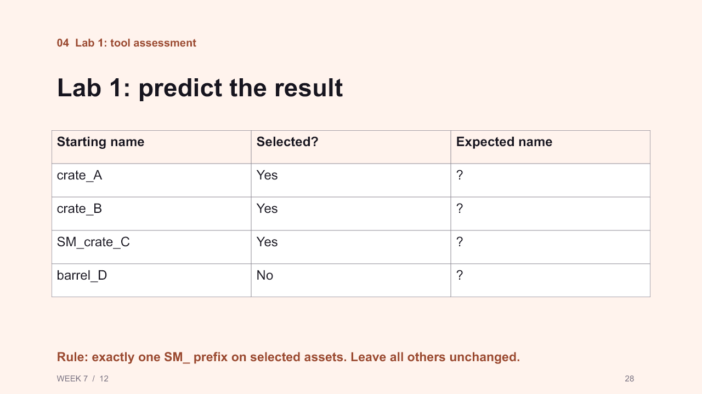
Copyable revised text
Lab 1: predict the result
Starting name | Selected? | Expected name
crate_A | Yes | ?
crate_B | Yes | ?
SM_crate_C | Yes | ?
barrel_D | No | ?
Rule: exactly one SM_ prefix on selected assets. Leave all others unchanged.
Editing directions: Keep the exact title. Keep the body text/table/code. Keep the existing visual assets and crop. Keep the question. Apply the displayed section color and live position.
Teaching rationale: Keep the example within its named topic block and connect it to the next classroom decision.
Read-aloud instructor notes
Your group is investigating a fictional batch renamer. Give selected assets exactly one SM_ prefix, preserve the rest of each name, and leave unselected assets unchanged. First write your own predicted names. Then compare within the group. Choose a reader, recorder, evidence checker and reporter. We will look at the actual case result only after you have committed to a prediction. What needs clarification about the task?
Sources and preparation
4.75 minutes. Elapsed 82.25–87. Questions and transitions are included. Demo execution uses the prepared tool, not the abbreviated teaching snippets.
Course/Slides/Week07/FinalClass20261013/facilitator.html
29. Lab 1: evidence and a retest
04 Lab 1: tool assessment · Stable anchor 12A · 4:57–5:00 PM (3 min) · Original slide 26
Previous
 Original v3 slide 26, anchor 12A
Original v3 slide 26, anchor 12AExact original slide text
FICTIONAL TEACHING CASE
Lab 1: evidence and a retest
WEEK 7
12A
Starting name
Expected
Reported result
crate_A
SM_crate_A
SM_crate_A
crate_B
SM_crate_B
SM_crate_B
SM_crate_C
SM_crate_C
SM_SM_crate_C
barrel_D
barrel_D
SM_barrel_D
The tool says “4 assets updated.” Did the task succeed?
Revised
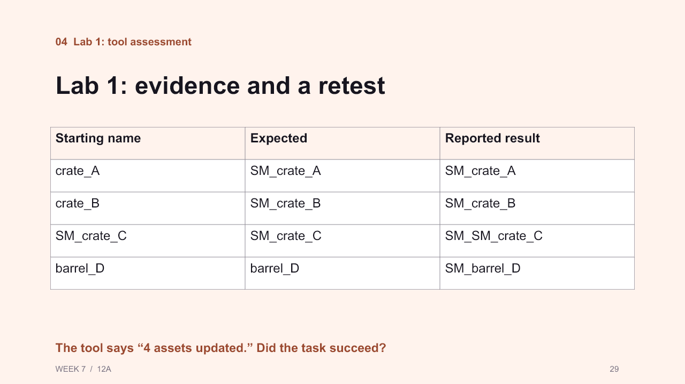
Copyable revised text
Lab 1: evidence and a retest
Starting name | Expected | Reported result
crate_A | SM_crate_A | SM_crate_A
crate_B | SM_crate_B | SM_crate_B
SM_crate_C | SM_crate_C | SM_SM_crate_C
barrel_D | barrel_D | SM_barrel_D
The tool says “4 assets updated.” Did the task succeed?
Editing directions: Keep the exact title. Keep the body text/table/code. Keep the existing visual assets and crop. Keep the question. Apply the displayed section color and live position.
Teaching rationale: Keep the example within its named topic block and connect it to the next classroom decision.
Read-aloud instructor notes
Two rows match the rule. The selected asset that already has a prefix gets another, and the unselected barrel changes. Write one finding using the input, expected result and observed result. Explain why it matters and name a test after a fix. We have no evidence of Undo or another run. Keep your first judgment so we can revisit it after the UX discussion.
Sources and preparation
3 minutes. Elapsed 87–90. Questions and transitions are included. Demo execution uses the prepared tool, not the abbreviated teaching snippets.
Course/Slides/Week07/FinalClass20261013/facilitator.html
30. UI/UX for artist tools
05 UI/UX for artist tools · Stable anchor S4 · 5:00–5:00:15 PM (0.25 min) · Original slide 27
Previous
 Original v3 slide 27, anchor S4
Original v3 slide 27, anchor S4Exact original slide text
SECTION 4 · CONCEPTS + TASK PREP · 20 MINUTES
UI/UX for artist tools
WEEK 7
S4
Understand the task
Make decisions clear
Test your assumptions
Vicarious Visions · Cinematic Builder · GDC 2018 · PDF p.35
Revised
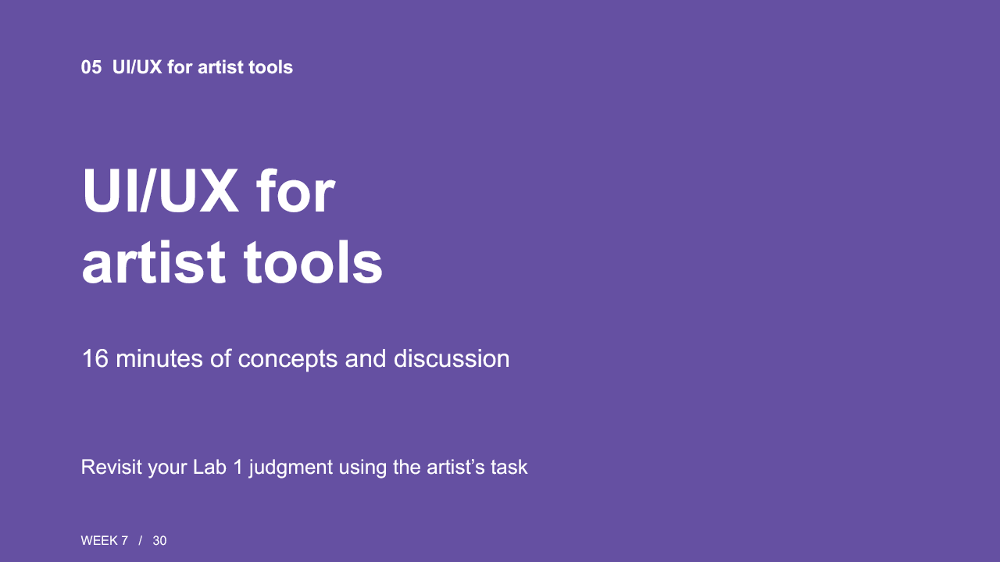
Copyable revised text
UI/UX for
artist tools
16 minutes of concepts and discussion
Revisit your Lab 1 judgment using the artist’s task
Editing directions: Replace the title with “UI/UX for artist tools”. Replace the body with the shown text/table/code. Replace or remove the previous visual as shown. Use the revised question shown on the slide. Apply the displayed section color and live position.
Teaching rationale: An unmistakable visual pause announces the next activity. The section name also identifies it without relying on color.
Read-aloud instructor notes
We are beginning ui/ux for
artist tools. 16 minutes of concepts and discussion. Revisit your Lab 1 judgment using the artist’s task
Sources and preparation
0.25 minutes. Elapsed 90–90.25. Questions and transitions are included. Demo execution uses the prepared tool, not the abbreviated teaching snippets.
vv
31. Interface and experience
05 UI/UX for artist tools · Stable anchor 14 · 5:00:15–5:01 PM (0.75 min) · Original slide 28
Previous
 Original v3 slide 28, anchor 14
Original v3 slide 28, anchor 14Exact original slide text
WEEK 7
Interface and experience
WEEK 7
14
UI: the controls, labels, and layout
UX: reaching the intended result in context
A successful execution can still fail the task
Which part of your first assessment would you defend?
Revised
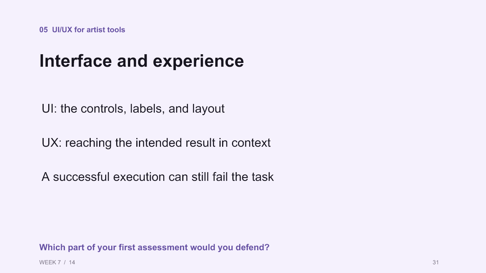
Copyable revised text
Interface and experience
UI: the controls, labels, and layout
UX: reaching the intended result in context
A successful execution can still fail the task
Which part of your first assessment would you defend?
Editing directions: Keep the exact title. Keep the body text/table/code. Keep the existing visual assets and crop. Keep the question. Apply the displayed section color and live position.
Teaching rationale: Keep the example within its named topic block and connect it to the next classroom decision.
Read-aloud instructor notes
Return to the renamer. A success count did not make the task successful. Some problems were functional errors; a clearer interface cannot repair the wrong mutation. UX also includes understanding scope, finding results, and recovering. Your initial instinct may be sound. We are adding a more precise way to explain and investigate it.
Sources and preparation
0.75 minutes. Elapsed 90.25–91. Questions and transitions are included. Demo execution uses the prepared tool, not the abbreviated teaching snippets.
heuristics
32. User stories
05 UI/UX for artist tools · Stable anchor 14B · 5:01–5:02:30 PM (1.5 min) · Original slide 30
Previous
 Original v3 slide 30, anchor 14B
Original v3 slide 30, anchor 14BExact original slide text
WEEK 7
User stories
WEEK 7
14B
As an environment artist…
I want to bring a revised prop into Unreal…
So I can inspect it without rebuilding its setup.
What would count as success for this artist?
Revised
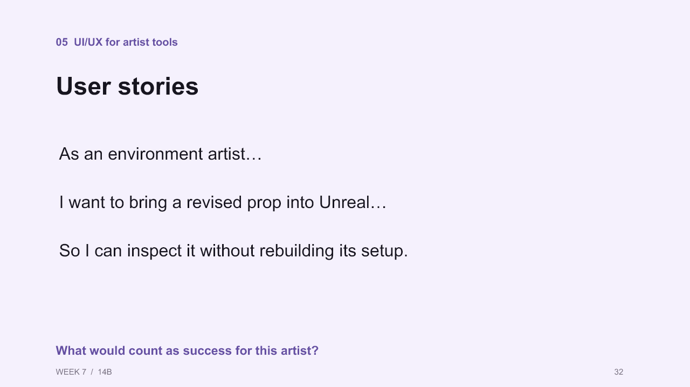
Copyable revised text
User stories
As an environment artist…
I want to bring a revised prop into Unreal…
So I can inspect it without rebuilding its setup.
What would count as success for this artist?
Editing directions: Keep the exact title. Keep the body text/table/code. Keep the existing visual assets and crop. Keep the question. Apply the displayed section color and live position.
Teaching rationale: Keep the example within its named topic block and connect it to the next classroom decision.
Read-aloud instructor notes
This is a classroom example of role, goal, and benefit. It starts a conversation rather than specifying a particular button. Add observable acceptance checks: the intended asset updates, the result is easy to locate, and unrelated work stays unchanged. Ask the artist about their current workflow before treating the story as a verified requirement. Include what the artist does before opening the tool and what they need to inspect afterwards. The tool window is one part of that workflow.
Sources and preparation
1.5 minutes. Elapsed 91–92.5. Questions and transitions are included. Demo execution uses the prepared tool, not the abbreviated teaching snippets.
story
system
33. Two layouts for the same task
05 UI/UX for artist tools · Stable anchor 14D · 5:02:30–5:04 PM (1.5 min) · Original slide 32
Previous
 Original v3 slide 32, anchor 14D
Original v3 slide 32, anchor 14DExact original slide text
WEEK 7
Two layouts for the same task
WEEK 7
14D
Illustrative sketches · neither layout is a tested recommendation
Which prediction could a paper test resolve?
Revised
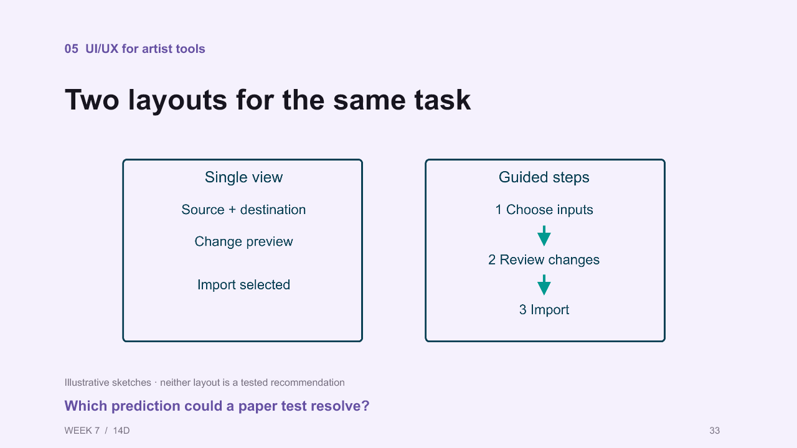
Copyable revised text
Two layouts for the same task
Which prediction could a paper test resolve?
Editing directions: Keep the exact title. Keep the body text/table/code. Keep the existing visual assets and crop. Keep the question. Apply the displayed section color and live position.
Teaching rationale: Keep the example within its named topic block and connect it to the next classroom decision.
Read-aloud instructor notes
These sketches support the same import task. One keeps everything visible; the other separates decisions into steps. Predict where a novice might hesitate and where an experienced artist might want to move faster. Test that prediction before choosing a layout. Sketch a starting state, a result and a failure. Paper or linked Figma frames can test interpretation and flow. A running Unreal tool is still needed to test the actual operation.
Sources and preparation
1.5 minutes. Elapsed 92.5–94. Questions and transitions are included. Demo execution uses the prepared tool, not the abbreviated teaching snippets.
paper
parallel
figma
34. Layout follows the task
05 UI/UX for artist tools · Stable anchor 15 · 5:04–5:05:30 PM (1.5 min) · Original slide 33
Previous
 Original v3 slide 33, anchor 15
Original v3 slide 33, anchor 15Exact original slide text
WEEK 7
Layout follows the task
WEEK 7
15
Detail from the current Material Setup practice interface
Which row tells you what will change on the crate?
Revised
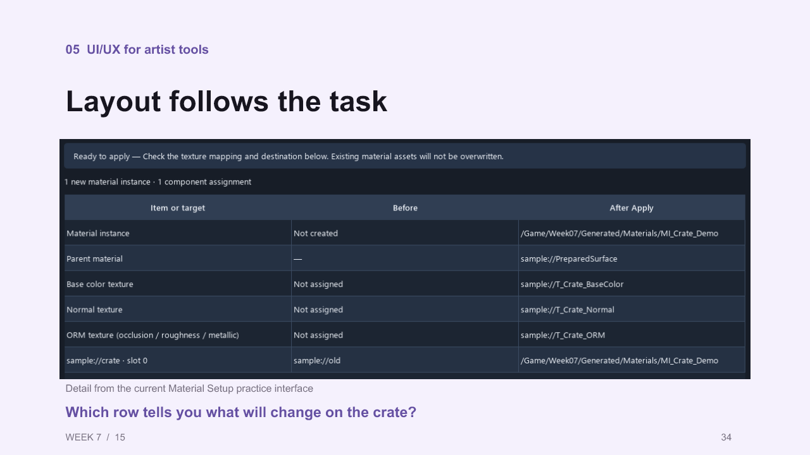
Copyable revised text
Layout follows the task
Which row tells you what will change on the crate?
Editing directions: Keep the exact title. Keep the body text/table/code. Keep the existing visual assets and crop. Keep the question. Apply the displayed section color and live position.
Teaching rationale: Keep the example within its named topic block and connect it to the next classroom decision.
Read-aloud instructor notes
Return to the material task we tried earlier. Find the scope count, then the row naming the crate and slot. That row makes the proposed assignment inspectable. The parent and textures are part of the decision too. Which information would you need before allowing this operation on your own work?
Sources and preparation
1.5 minutes. Elapsed 94–95.5. Questions and transitions are included. Demo execution uses the prepared tool, not the abbreviated teaching snippets.
Week07UnrealPython/Docs/Students/START_HERE.md
35. The artist’s model of the work
05 UI/UX for artist tools · Stable anchor 14F · 5:05:30–5:07 PM (1.5 min) · Original slide 35
Previous
 Original v3 slide 35, anchor 14F
Original v3 slide 35, anchor 14FExact original slide text
AAA PRODUCTION · CONTENT MODELS
The artist’s model of the work
WEEK 7
14F
Jeff Stewart · Vicarious Visions · GDC 2018 · PDF p.35
Would an artist rather edit a duration or two unrelated events?
Revised
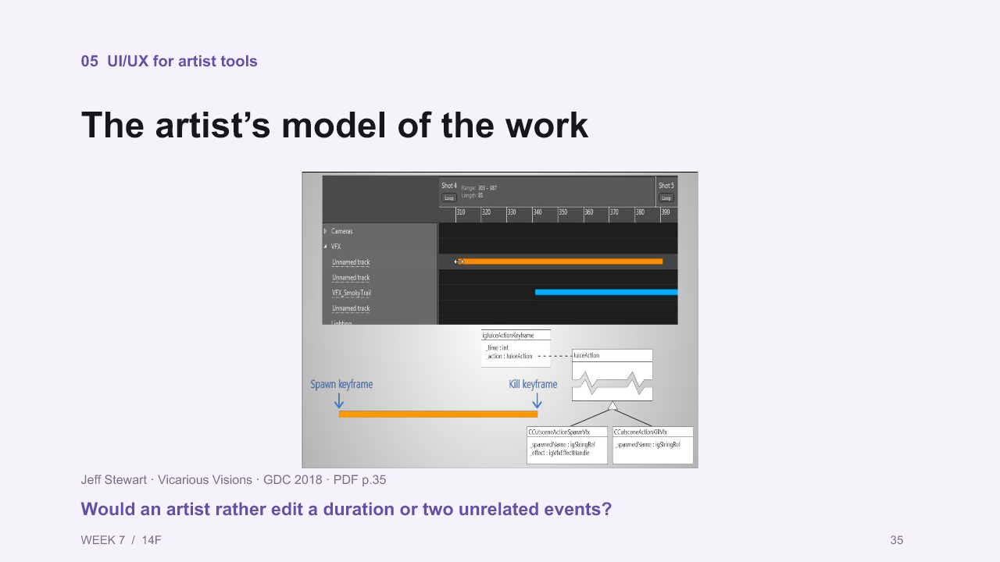
Copyable revised text
The artist’s model of the work
Would an artist rather edit a duration or two unrelated events?
Editing directions: Keep the exact title. Keep the body text/table/code. Keep the existing visual assets and crop. Keep the question. Apply the displayed section color and live position.
Teaching rationale: Keep the example within its named topic block and connect it to the next classroom decision.
Read-aloud instructor notes
Stewart’s Cinematic Builder example contrasts an artist-facing VFX duration with underlying spawn and kill keyframes. The artist wants to reason about when an effect begins and how long it lasts. Exposing two unrelated implementation events made that task harder to understand. This does not mean hiding all technical detail: expose details when they support the user’s next decision. For our importer, a meaningful revised-prop result may be more useful than a list of internal package operations.
Sources and preparation
1.5 minutes. Elapsed 95.5–97. Questions and transitions are included. Demo execution uses the prepared tool, not the abbreviated teaching snippets.
vv
36. State and feedback
05 UI/UX for artist tools · Stable anchor 15A · 5:07–5:08 PM (1 min) · Original slide 36
Previous
 Original v3 slide 36, anchor 15A
Original v3 slide 36, anchor 15AExact original slide text
WEEK 7
State and feedback
WEEK 7
15A
Detail from the current Material Setup practice interface
What would you inspect after the completion message?
Revised
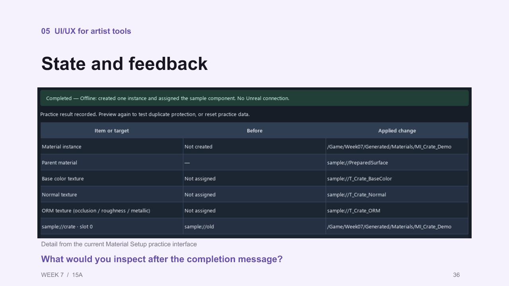
Copyable revised text
State and feedback
What would you inspect after the completion message?
Editing directions: Keep the exact title. Keep the body text/table/code. Keep the existing visual assets and crop. Keep the question. Apply the displayed section color and live position.
Teaching rationale: Keep the example within its named topic block and connect it to the next classroom decision.
Read-aloud instructor notes
Completed tells us that this operation returned successfully. The table changes to applied rows, and Apply becomes unavailable because the plan has been consumed. We still inspect the affected target and protected scope. A completion message alone does not establish that the user achieved the intended task.
Sources and preparation
1 minutes. Elapsed 97–98. Questions and transitions are included. Demo execution uses the prepared tool, not the abbreviated teaching snippets.
Week07UnrealPython/Docs/Students/START_HERE.md
37. A UI state becomes a Qt decision
05 UI/UX for artist tools · Stable anchor 15G · 5:08–5:09 PM (1 min) · Original slide 37
Previous
 Original v3 slide 37, anchor 15G
Original v3 slide 37, anchor 15GExact original slide text
WEEK 7
A UI state becomes a Qt decision
WEEK 7
15G
pending = self.session.pending
ready = bool(pending) and (
not pending[3].get('warnings')
or self.ack.isChecked()
)
self.apply_button.setEnabled(ready)
assistants.py, update_apply excerpt from the current tool
Why must Apply still recheck the operation?Revised
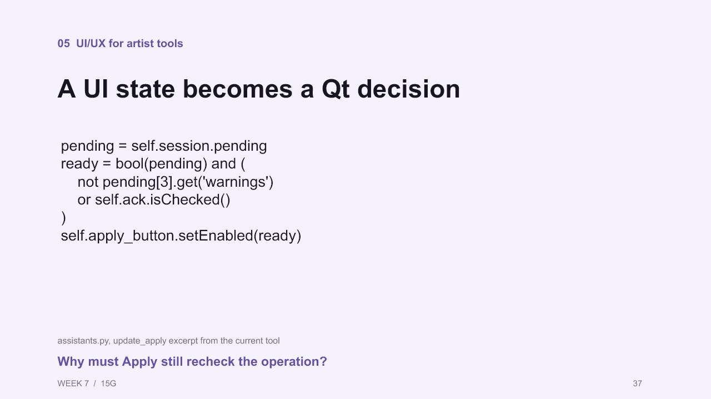
Copyable revised text
A UI state becomes a Qt decision
pending = self.session.pending
ready = bool(pending) and (
not pending[3].get('warnings')
or self.ack.isChecked()
)
self.apply_button.setEnabled(ready)
Why must Apply still recheck the operation?Editing directions: Keep the exact title. Keep the body text/table/code. Keep the existing visual assets and crop. Keep the question. Apply the displayed section color and live position.
Teaching rationale: Keep the example within its named topic block and connect it to the next classroom decision.
Read-aloud instructor notes
This is the current assistant interface. A pending preview must exist. If it contains warnings, the user must acknowledge them before Apply becomes available. The session still rechecks the operation when Apply runs. Enabling a button does not replace backend validation, and acknowledging a warning cannot bypass a hard limit.
Sources and preparation
1 minutes. Elapsed 98–99. Questions and transitions are included. Demo execution uses the prepared tool, not the abbreviated teaching snippets.
Week07UnrealPython/Content/Python/week07_tooling/ui/assistants.py
38. An error should support recovery
05 UI/UX for artist tools · Stable anchor 15D · 5:09–5:10 PM (1 min) · Original slide 38
Previous
 Original v3 slide 38, anchor 15D
Original v3 slide 38, anchor 15DExact original slide text
WEEK 7
An error should support recovery
WEEK 7
15D
Actual course PySide tool · offline blocked state
What would you change in this message?
Revised
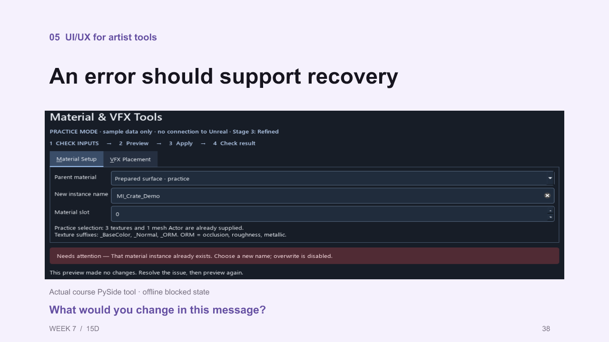
Copyable revised text
An error should support recovery
What would you change in this message?
Editing directions: Keep the exact title. Keep the body text/table/code. Keep the existing visual assets and crop. Keep the question. Apply the displayed section color and live position.
Teaching rationale: Keep the example within its named topic block and connect it to the next classroom decision.
Read-aloud instructor notes
Read the message as an artist who has not seen the code. Can you identify the problem, the affected input, and the next action? A raw exception may help the developer, but the artist also needs a way to resume the task.
Sources and preparation
1 minutes. Elapsed 99–100. Questions and transitions are included. Demo execution uses the prepared tool, not the abbreviated teaching snippets.
heuristics
39. Recovery and accessibility
05 UI/UX for artist tools · Stable anchor 15B · 5:10–5:11 PM (1 min) · Original slide 39
Previous
 Original v3 slide 39, anchor 15B
Original v3 slide 39, anchor 15BExact original slide text
WEEK 7
Recovery and accessibility
WEEK 7
15B
# Existing PySide view implementation
self.preview.setAccessibleName(
"Selected Actors change preview"
)
Review consequential changes before applying them
Test the recovery path you actually offer
Keep focus, labels, and status understandable
Could a classmate recover without help?Revised
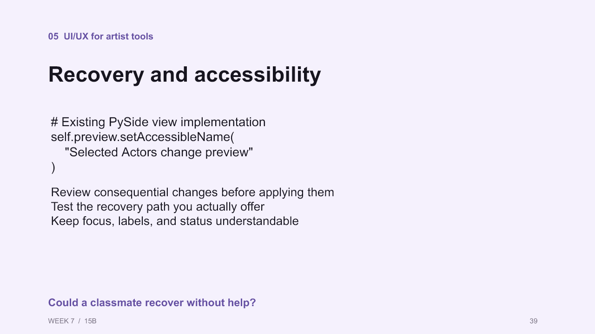
Copyable revised text
Recovery and accessibility
# Existing PySide view implementation
self.preview.setAccessibleName(
"Selected Actors change preview"
)
Review consequential changes before applying them
Test the recovery path you actually offer
Keep focus, labels, and status understandable
Could a classmate recover without help?Editing directions: Keep the exact title. Keep the body text/table/code. Keep the existing visual assets and crop. Keep the question. Apply the displayed section color and live position.
Teaching rationale: Keep the example within its named topic block and connect it to the next classroom decision.
Read-aloud instructor notes
Recovery can mean Undo for an editor transaction, or a separate restore and reimport procedure. Do not promise that all operations can be undone. The code excerpt names the preview for accessibility; it is one implementation detail, not a complete accessibility guarantee. Check keyboard operation, visible focus, readable text, and status cues that do not rely on color alone.
Sources and preparation
1 minutes. Elapsed 100–101. Questions and transitions are included. Demo execution uses the prepared tool, not the abbreviated teaching snippets.
ryan
access
qt
Week07UnrealPython/Content/Python/week07_tooling/ui/views.py
40. Feedback changes the interface
05 UI/UX for artist tools · Stable anchor 16C · 5:11–5:12:30 PM (1.5 min) · Original slide 41
Previous
 Original v3 slide 41, anchor 16C
Original v3 slide 41, anchor 16CExact original slide text
AAA PRODUCTION · FEEDBACK
Feedback changes the interface
WEEK 7
16C
Etienne Palmer-Campbell · NetherRealm · GDC 2025 · PDF p.47
Which nearby action would make your workflow easier to complete?
Revised
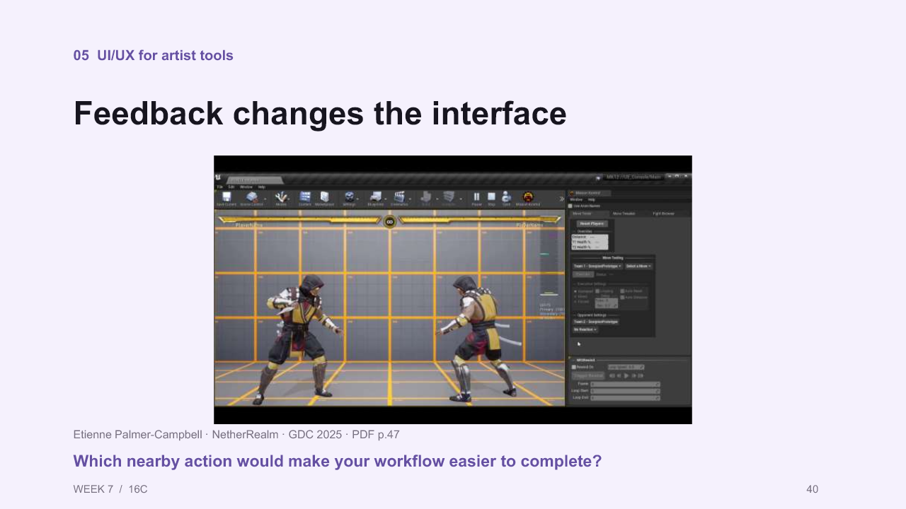
Copyable revised text
Feedback changes the interface
Which nearby action would make your workflow easier to complete?
Editing directions: Keep the exact title. Keep the body text/table/code. Keep the existing visual assets and crop. Keep the question. Apply the displayed section color and live position.
Teaching rationale: Keep the example within its named topic block and connect it to the next classroom decision.
Read-aloud instructor notes
QA feedback led Mission Kontrol to add controls for both players and frame stepping. Previously, debug actions could depend on gamepad combinations, but someone working in the tool might not be holding a gamepad. The lesson is specific: look at adjacent actions required to finish the task. A technically functional panel can still force awkward handoffs. Ask your tester what they need immediately before and after the operation, then observe whether the interface supports those steps. Mission Kontrol is NetherRealm’s Unreal-based developer tool for repeatable character actions. It uses Slate and game automation rather than our Python editor recipe.
Sources and preparation
1.5 minutes. Elapsed 101–102.5. Questions and transitions are included. Demo execution uses the prepared tool, not the abbreviated teaching snippets.
mkpdf
41. A test produces the next question
05 UI/UX for artist tools · Stable anchor 16E · 5:12:30–5:16 PM (3.5 min) · Original slide 43
Previous
 Original v3 slide 43, anchor 16E
Original v3 slide 43, anchor 16EExact original slide text
WEEK 7
A test produces the next question
WEEK 7
16E
Course testing loop · a possible explanation is not yet a finding
What questions remain before you write the peer-test task?
Revised
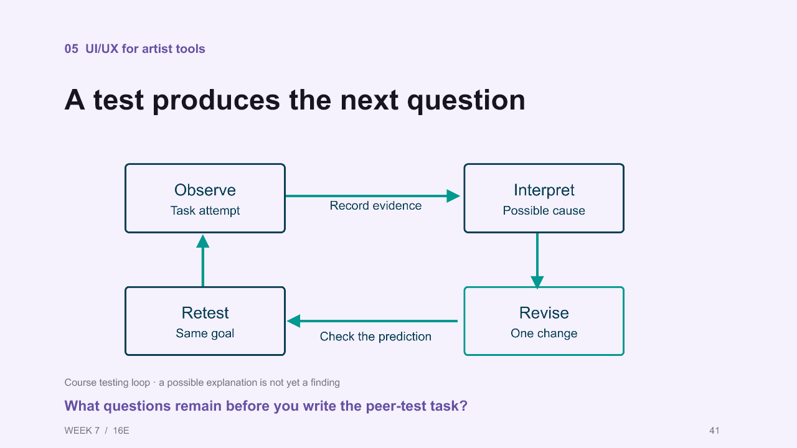
Copyable revised text
A test produces the next question
What questions remain before you write the peer-test task?
Editing directions: Keep the exact title. Keep the body text/table/code. Keep the existing visual assets and crop. Keep the question. Apply the displayed section color and live position.
Teaching rationale: Keep the example within its named topic block and connect it to the next classroom decision.
Read-aloud instructor notes
An observation gives you evidence. Your explanation is still a hypothesis. Make one change that addresses it and repeat the task. If the difficulty remains, revise the explanation rather than merely adding more instructions. For example, the tester chose the wrong destination. That is the observation. An unclear label is a possible explanation. Showing the full path is a proposed change, and a new tester’s attempt is the retest. What questions do you have before writing your own task?
Sources and preparation
3.5 minutes. Elapsed 102.5–106. Questions and transitions are included. Demo execution uses the prepared tool, not the abbreviated teaching snippets.
testing
tasks
42. Peer-test preparation
06 Peer-test preparation · Stable anchor S4A · 5:16–5:16:15 PM (0.25 min)
Previous
New slide inserted in this revision.
Revised
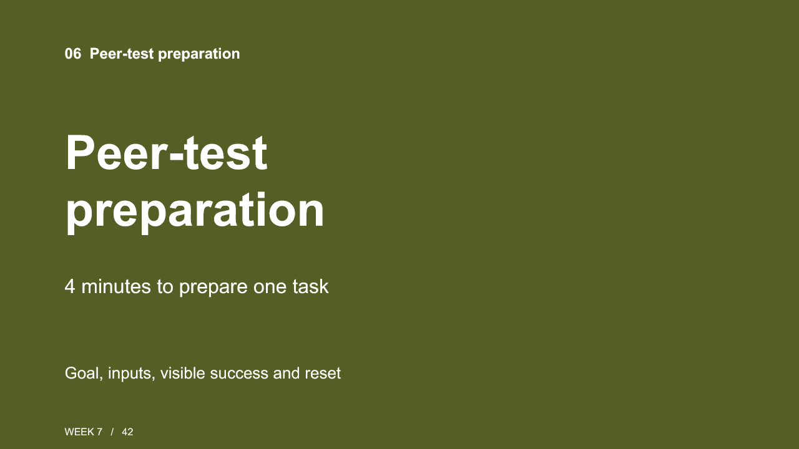
Copyable revised text
Peer-test
preparation
4 minutes to prepare one task
Goal, inputs, visible success and reset
Editing directions: Insert at the displayed live position. Use the shown title, body and read-aloud notes.
Teaching rationale: An unmistakable visual pause announces the next activity. The section name also identifies it without relying on color.
Read-aloud instructor notes
Now prepare the task your classmates will attempt. Use the preparation sheet. Give a goal and enough context to begin, and define how to return to the same starting state.
Sources and preparation
0.25 minutes. Elapsed 106–106.25. Questions and transitions are included. Demo execution uses the prepared tool, not the abbreviated teaching snippets.
43. Your peer-test task
06 Peer-test preparation · Stable anchor 16A · 5:16:15–5:20 PM (3.75 min) · Original slide 44
Previous
 Original v3 slide 44, anchor 16A
Original v3 slide 44, anchor 16AExact original slide text
4 MINUTES OF PREPARATION
Your peer-test task
WEEK 7
16A
A goal, starting inputs and visible success
Protected scope and a reset method
One version, one task, three reviewers
Could a partner attempt this goal without a click-by-click script?
Revised
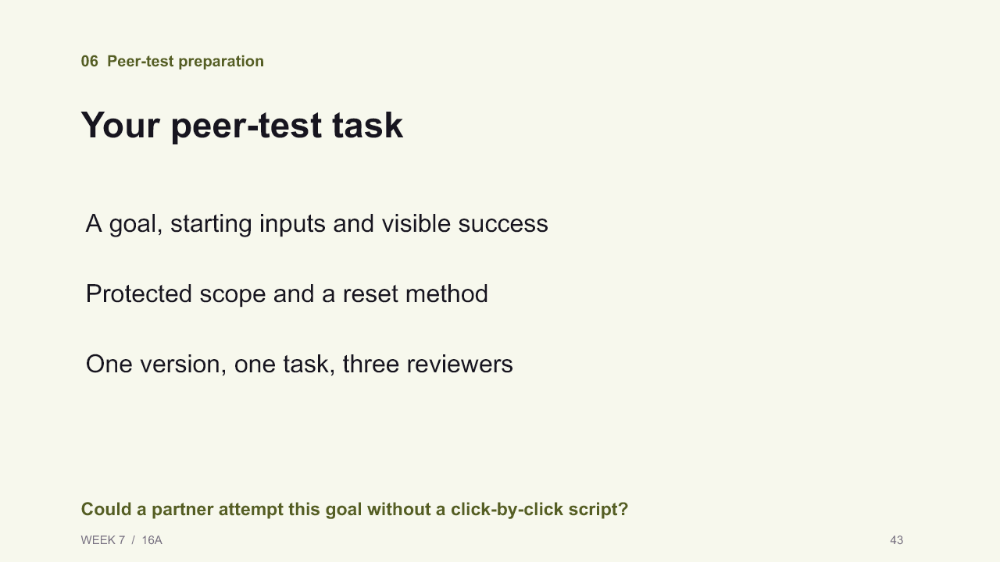
Copyable revised text
Your peer-test task
A goal, starting inputs and visible success
Protected scope and a reset method
One version, one task, three reviewers
Could a partner attempt this goal without a click-by-click script?
Editing directions: Keep the exact title. Keep the body text/table/code. Keep the existing visual assets and crop. Keep the question. Apply the displayed section color and live position.
Teaching rationale: Keep the example within its named topic block and connect it to the next classroom decision.
Read-aloud instructor notes
Use the preparation sheet to write one task that fits a two-minute attempt. For example, give these three selected props exactly one prefix while leaving the unselected light unchanged. Define success and how you will restore the same input. Declare hands-on, recorded or concept review. Keep the same task and version across rounds so we can compare observations. If you have no runnable tool, sketch the input, action and intended output. Which part of your task needs clarification?
Sources and preparation
3.75 minutes. Elapsed 106.25–110. Questions and transitions are included. Demo execution uses the prepared tool, not the abbreviated teaching snippets.
Course/Slides/Week07/FinalClass20261013/preparation.html
44. Lab 2 Peer testing
07 Lab 2: peer testing · Stable anchor S5 · 5:20–5:20:15 PM (0.25 min) · Original slide 45
Previous
 Original v3 slide 45, anchor S5
Original v3 slide 45, anchor S5Exact original slide text
SECTION 5 · TESTING 35 MIN + SYNTHESIS 5 MIN
Peer testing
WEEK 7
S5
Observe an attempt
Record the evidence
Choose a retest
Nielsen Norman Group · follow-up interview after a usability task
Revised
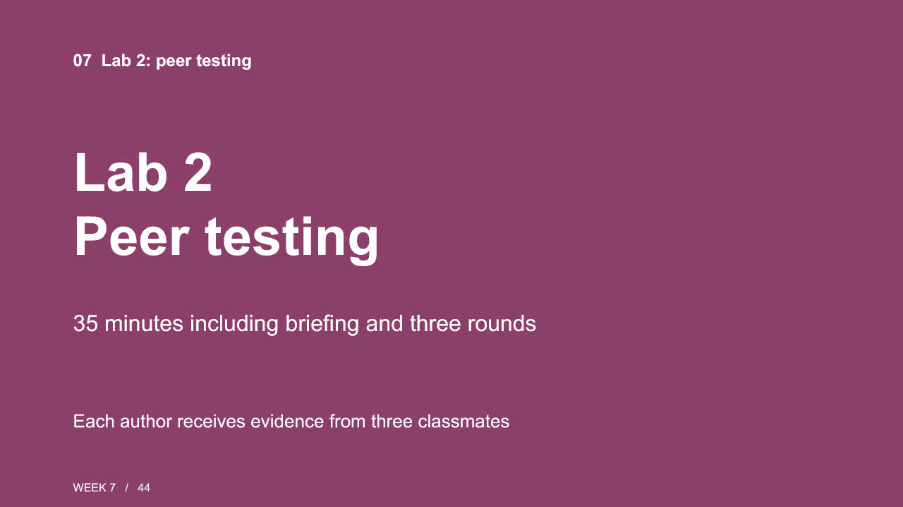
Copyable revised text
Lab 2
Peer testing
35 minutes including briefing and three rounds
Each author receives evidence from three classmates
Editing directions: Replace the title with “Lab 2 Peer testing”. Replace the body with the shown text/table/code. Replace or remove the previous visual as shown. Use the revised question shown on the slide. Apply the displayed section color and live position.
Teaching rationale: An unmistakable visual pause announces the next activity. The section name also identifies it without relying on color.
Read-aloud instructor notes
We are beginning lab 2
peer testing. 35 minutes including briefing and three rounds. Each author receives evidence from three classmates
Sources and preparation
0.25 minutes. Elapsed 110–110.25. Questions and transitions are included. Demo execution uses the prepared tool, not the abbreviated teaching snippets.
testing
45. Lab 2: three peer reviews
07 Lab 2: peer testing · Stable anchor 17 · 5:20:15–5:21:15 PM (1 min) · Original slide 46
Previous
 Original v3 slide 46, anchor 17
Original v3 slide 46, anchor 17Exact original slide text
3-MINUTE BRIEFING
Lab 2: three peer reviews
WEEK 7
17
Author gives the goal, then observes
Reviewer attempts and records evidence
Give the completed sheet to the author
What questions do you have before the first attempt?
Revised
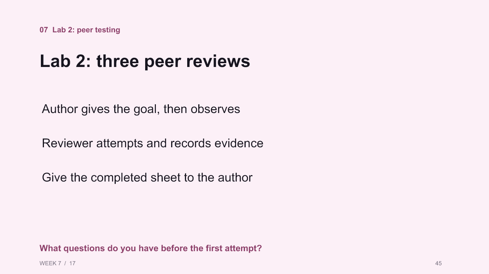
Copyable revised text
Lab 2: three peer reviews
Author gives the goal, then observes
Reviewer attempts and records evidence
Give the completed sheet to the author
What questions do you have before the first attempt?
Editing directions: Keep the exact title. Keep the body text/table/code. Keep the existing visual assets and crop. Keep the question. Apply the displayed section color and live position.
Teaching rationale: Keep the example within its named topic block and connect it to the next classroom decision.
Read-aloud instructor notes
Each person reviews three classmates in a group of four. Use the author’s prepared machine. The author gives the goal and necessary domain information, then lets the reviewer attempt it. Say what you expect and record any help. Use the same task and version each round. If launch is blocked for a minute, record the blocker and switch to your declared recording or concept. That evidence cannot establish untested execution. Ask now if the roles are unclear.
Sources and preparation
1 minutes. Elapsed 110.25–111.25. Questions and transitions are included. Demo execution uses the prepared tool, not the abbreviated teaching snippets.
Course/Slides/Week07/FinalClass20261013/peer-sheet.html
46. A ten-minute reciprocal round
07 Lab 2: peer testing · Stable anchor 18 · 5:21:15–5:22:15 PM (1 min) · Original slide 47
Previous
 Original v3 slide 47, anchor 18
Original v3 slide 47, anchor 18Exact original slide text
WEEK 7
A ten-minute reciprocal round
WEEK 7
18
Time
Action
0:00–0:30
Author states goal, inputs, success, and safety
0:30–2:30
Partner attempts the task
2:30–4:00
Record evidence and share
4:00–8:00
Swap roles and repeat
8:00–10:00
Finish both records and reset
Record the action, expected result, observed result and help needed.
Revised
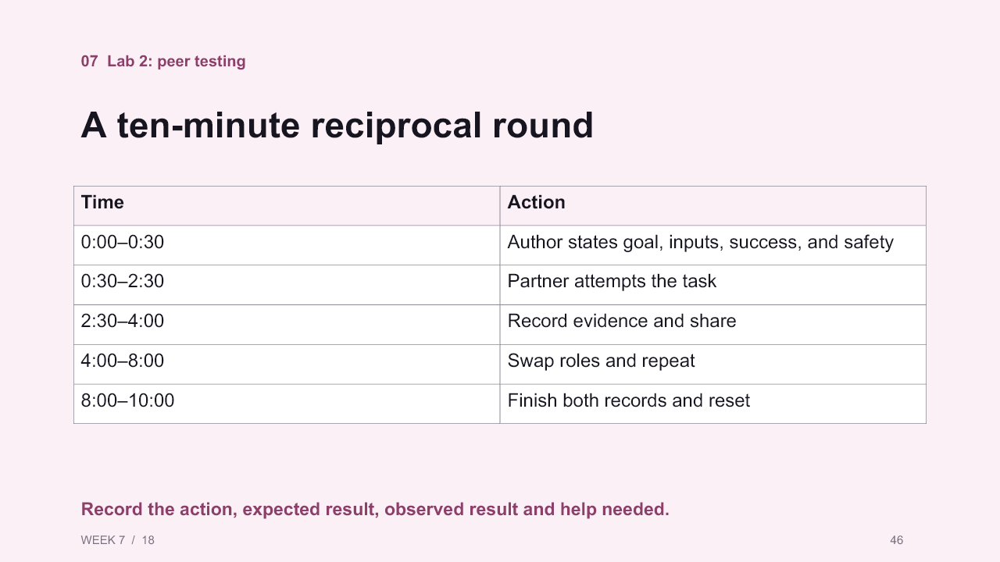
Copyable revised text
A ten-minute reciprocal round
Time | Action
0:00–0:30 | Author states goal, inputs, success, and safety
0:30–2:30 | Partner attempts the task
2:30–4:00 | Record evidence and share
4:00–8:00 | Swap roles and repeat
8:00–10:00 | Finish both records and reset
Record the action, expected result, observed result and help needed.
Editing directions: Keep the exact title. Keep the body text/table/code. Keep the existing visual assets and crop. Keep the question. Apply the displayed section color and live position.
Teaching rationale: Keep the example within its named topic block and connect it to the next classroom decision.
Read-aloud instructor notes
In each pair the later letter tests the earlier letter’s tool first. You have thirty seconds for the goal, two minutes for the attempt, then ninety seconds to record and explain your finding. At four minutes swap roles. At eight minutes finish both sheets and reset. Record a supported strength. If no fault appeared, say so and propose a useful next test.
Sources and preparation
1 minutes. Elapsed 111.25–112.25. Questions and transitions are included. Demo execution uses the prepared tool, not the abbreviated teaching snippets.
testing
Course/Slides/Week07/FinalClass20261013/facilitator.html
47. Partner rotations
07 Lab 2: peer testing · Stable anchor 19 · 5:22:15–5:55 PM (32.75 min) · Original slide 48
Previous
 Original v3 slide 48, anchor 19
Original v3 slide 48, anchor 19Exact original slide text
WEEK 7
Partner rotations
WEEK 7
19
Round / time
Pairs
First authors
1 / 5:23–5:33
A–B and C–D
A and C
2 / 5:34–5:44
A–C and B–D
A and B
3 / 5:45–5:55
A–D and B–C
A and B
Later letter tests first. Swap roles at minute 4.
Same task and start state. One sheet per reviewer, given to the author.
Revised
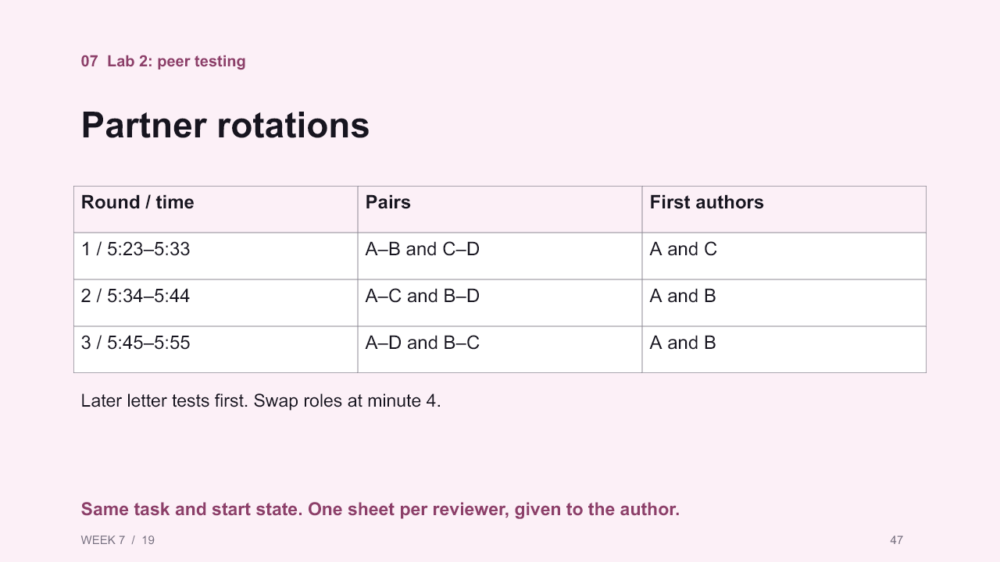
Copyable revised text
Partner rotations
Later letter tests first. Swap roles at minute 4.
Round / time | Pairs | First authors
1 / 5:23–5:33 | A–B and C–D | A and C
2 / 5:34–5:44 | A–C and B–D | A and B
3 / 5:45–5:55 | A–D and B–C | A and B
Same task and start state. One sheet per reviewer, given to the author.
Editing directions: Keep the exact title. Keep the body text/table/code. Keep the existing visual assets and crop. Keep the question. Apply the displayed section color and live position.
Teaching rationale: Keep the example within its named topic block and connect it to the next classroom decision.
Read-aloud instructor notes
Stay within your group and follow these pairings. The later letter tests the earlier letter’s tool first. Both authors receive a review before you change partners. Give your sheet to the author immediately. If a round is interrupted, label the review incomplete. Three distinct classmates are possible in a full group of four. Tell me now if your group needs a different arrangement.
Sources and preparation
32.75 minutes. Elapsed 112.25–145. Questions and transitions are included. Demo execution uses the prepared tool, not the abbreviated teaching snippets.
Course/Slides/Week07/FinalClass20261013/facilitator.html
48. Reflection and next revision
08 Reflection · Stable anchor S6 · 5:55–5:55:15 PM (0.25 min)
Previous
New slide inserted in this revision.
Revised
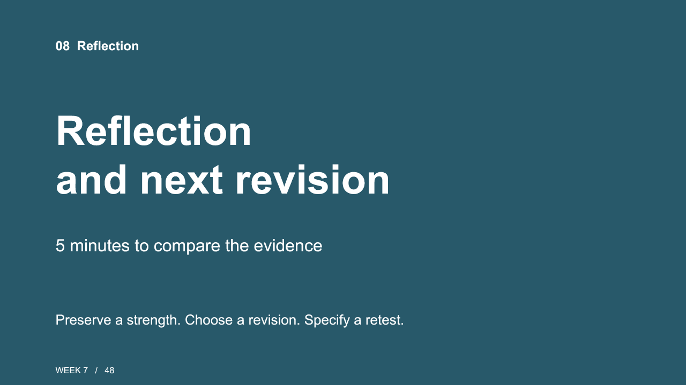
Copyable revised text
Reflection
and next revision
5 minutes to compare the evidence
Preserve a strength. Choose a revision. Specify a retest.
Editing directions: Insert at the displayed live position. Use the shown title, body and read-aloud notes.
Teaching rationale: An unmistakable visual pause announces the next activity. The section name also identifies it without relying on color.
Read-aloud instructor notes
The attempts are complete. Compare your evidence before choosing what to change. Keep a supported strength and identify the next test.
Sources and preparation
0.25 minutes. Elapsed 145–145.25. Questions and transitions are included. Demo execution uses the prepared tool, not the abbreviated teaching snippets.
49. One revision supported by evidence
08 Reflection · Stable anchor 20 · 5:55:15–6:00 PM (4.75 min) · Original slide 49
Previous
 Original v3 slide 49, anchor 20
Original v3 slide 49, anchor 20Exact original slide text
5-MINUTE SYNTHESIS
One revision supported by evidence
WEEK 7
20
Preserve one observed strength
Choose a consequential issue or uncertainty
Specify the input, action and expected result
Which evidence changed or strengthened your first judgment?
Revised
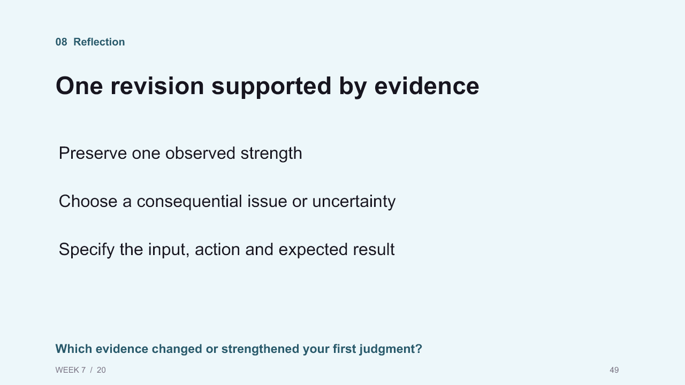
Copyable revised text
One revision supported by evidence
Preserve one observed strength
Choose a consequential issue or uncertainty
Specify the input, action and expected result
Which evidence changed or strengthened your first judgment?
Editing directions: Keep the exact title. Keep the body text/table/code. Keep the existing visual assets and crop. Keep the question. Apply the displayed section color and live position.
Teaching rationale: Keep the example within its named topic block and connect it to the next classroom decision.
Read-aloud instructor notes
Read the three reviews you received. Choose a priority because of its consequence and evidence, not simply the number of votes. Preserve one thing that worked. Write the smallest useful revision or experiment and exactly how you would retest it. If feedback conflicts, compare tasks, versions, review modes and help before deciding. You may keep your initial design if the evidence supports it. Record any unresolved question.
Sources and preparation
4.75 minutes. Elapsed 145.25–150. Questions and transitions are included. Demo execution uses the prepared tool, not the abbreviated teaching snippets.
Course/Slides/Week07/FinalClass20261013/reflection.html
50. Explore further
Explore further · Stable anchor SX · Reference only
Previous
New slide inserted in this revision.
Revised
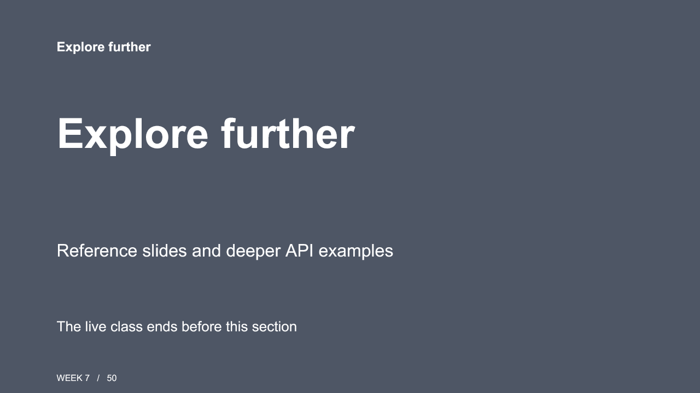
Copyable revised text
Explore further
Reference slides and deeper API examples
The live class ends before this section
Editing directions: Insert at the displayed live position. Use the shown title, body and read-aloud notes.
Teaching rationale: An unmistakable visual pause announces the next activity. The section name also identifies it without relying on color.
Read-aloud instructor notes
These slides support later study and specific questions.
Sources and preparation
Optional reference, outside the 150-minute live route.
51. What you should be able to explain
Explore further · Stable anchor 02A · Reference only · Original slide 3
Previous
 Original v3 slide 3, anchor 02A
Original v3 slide 3, anchor 02AExact original slide text
WEEK 7
What you should be able to explain
WEEK 7
02A
Scope: what will change?
Evidence: did it work?
Use: can a peer succeed?
Course Unreal fixture · scope and verification are separate checks
What would make you trust a tool with your project?
Revised
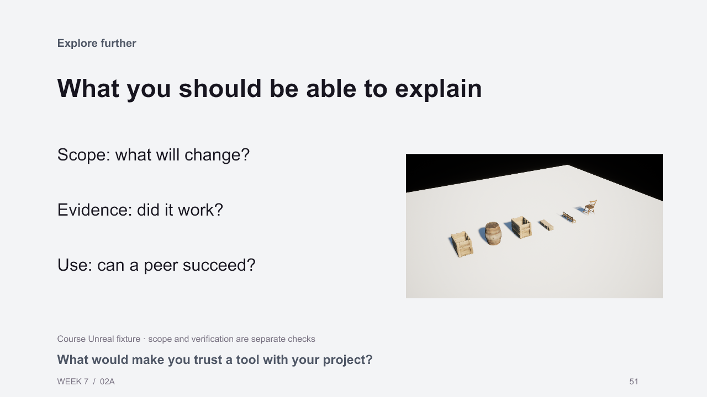
Copyable revised text
What you should be able to explain
Scope: what will change?
Evidence: did it work?
Use: can a peer succeed?
What would make you trust a tool with your project?
Editing directions: Keep the exact title. Keep the body text/table/code. Keep the existing visual assets and crop. Keep the question. Apply the displayed section color and live position. Move this topic to the reference section after the live route.
Teaching rationale: Preserve the source topic for named follow-up without interrupting the live sequence.
Read-aloud instructor notes
By the end, you should be able to explain scope, evidence, and the user’s task. A script finishing without an exception is only one part of success. Keep one tool from your own work in mind as we go.
Sources and preparation
Optional reference, outside the 150-minute live route.
heuristics
52. Tools are part of game production
Explore further · Stable anchor 02B · Reference only · Original slide 4
Previous
 Original v3 slide 4, anchor 02B
Original v3 slide 4, anchor 02BExact original slide text
AAA PRODUCTION · HORIZON ZERO DAWN
Tools are part of game production
WEEK 7
02B
Guerrilla · Sumaili & van der Steen · GDC 2017 · PDF p.23
Which repeated task would you remove from this workflow?
Revised
Copyable revised text
Tools are part of game production
Which repeated task would you remove from this workflow?
Editing directions: Keep the exact title. Keep the body text/table/code. Keep the existing visual assets and crop. Keep the question. Apply the displayed section color and live position. Move this topic to the reference section after the live route.
Teaching rationale: Preserve the source topic for named follow-up without interrupting the live sequence.
Read-aloud instructor notes
This is Guerrilla’s Decima level editor, shown in its Horizon Zero Dawn pipeline talk. The class-sized question is smaller: which repeated step prevents an artist from checking their work? Keep that task in view as we learn a new host API.
Sources and preparation
Optional reference, outside the 150-minute live route.
horizon
horizonpdf
53. Python across applications
Explore further · Stable anchor 05 · Reference only · Original slide 6
Previous
 Original v3 slide 6, anchor 05
Original v3 slide 6, anchor 05Exact original slide text
WEEK 7
Python across applications
WEEK 7
05
Keep loops, functions, conditions, and data structures
Replace Maya commands with Unreal editor APIs
Carry over explicit inputs, scope, and useful reports
Which part of your Maya tool is independent of Maya?
Revised
Copyable revised text
Python across applications
Keep loops, functions, conditions, and data structures
Replace Maya commands with Unreal editor APIs
Carry over explicit inputs, scope, and useful reports
Which part of your Maya tool is independent of Maya?
Editing directions: Keep the exact title. Keep the body text/table/code. Keep the existing visual assets and crop. Keep the question. Apply the displayed section color and live position. Move this topic to the reference section after the live route.
Teaching rationale: Preserve the source topic for named follow-up without interrupting the live sequence.
Read-aloud instructor notes
Your general Python knowledge carries over. The objects and operations exposed by the host application change. Keep reusable rules separate from host-specific operations where practical. Here, unreal is the module exposed by the editor; installing ordinary Python alone does not create an Unreal editor session.
Sources and preparation
Optional reference, outside the 150-minute live route.
python
karol
54. Unreal’s object model
Explore further · Stable anchor 06 · Reference only · Original slide 9
Previous
 Original v3 slide 9, anchor 06
Original v3 slide 9, anchor 06Exact original slide text
WEEK 7
Unreal’s object model
WEEK 7
06
Entity
Example
Why scope matters
Asset
A Static Mesh in the Content Browser
May be referenced by many placements
Actor
One placed crate in the level
Has its own label and transform
Component
The Actor’s Static Mesh Component
References the mesh and can hold overrides
If two Actors share a mesh, which edits could affect both?
Revised
Copyable revised text
Unreal’s object model
Entity | Example | Why scope matters
Asset | A Static Mesh in the Content Browser | May be referenced by many placements
Actor | One placed crate in the level | Has its own label and transform
Component | The Actor’s Static Mesh Component | References the mesh and can hold overrides
If two Actors share a mesh, which edits could affect both?
Editing directions: Keep the exact title. Keep the body text/table/code. Keep the existing visual assets and crop. Keep the question. Apply the displayed section color and live position. Move this topic to the reference section after the live route.
Teaching rationale: Preserve the source topic for named follow-up without interrupting the live sequence.
Read-aloud instructor notes
A placed object and the asset it references are not the same thing. In our existing fixture, six prop Actors use five shared mesh assets. Editing an Actor transform is different from changing the shared asset. A component can also carry a material override. Always identify which layer your operation edits.
Sources and preparation
Optional reference, outside the 150-minute live route.
python
Course/Slides/Week07/PrepNotes/sources/oster-07.html
Course/Slides/Week07/UnrealPythonDemo/index.html
55. Blueprints as an editor interface
Explore further · Stable anchor 08 · Reference only · Original slide 17
Previous
 Original v3 slide 17, anchor 08
Original v3 slide 17, anchor 08Exact original slide text
WEEK 7
Blueprints as an editor interface
WEEK 7
08
Layer
Responsibility
Editor Utility Widget
Inputs, scope, actions, and result display
Execute Python Script
Pass named inputs and outputs
Python operation
Validate, perform the operation, report results
Should the button contain the whole tool—or call one operation?
Revised
Copyable revised text
Blueprints as an editor interface
Layer | Responsibility
Editor Utility Widget | Inputs, scope, actions, and result display
Execute Python Script | Pass named inputs and outputs
Python operation | Validate, perform the operation, report results
Should the button contain the whole tool—or call one operation?
Editing directions: Keep the exact title. Keep the body text/table/code. Keep the existing visual assets and crop. Keep the question. Apply the displayed section color and live position. Move this topic to the reference section after the live route.
Teaching rationale: Preserve the source topic for named follow-up without interrupting the live sequence.
Read-aloud instructor notes
This is the Blueprint connection we need today. Epic supports Python execution nodes in editor-only Blueprints such as Editor Utility Widgets. The Execute Python Script node can expose custom inputs and outputs. It does not make Python a gameplay scripting language. Its execution-success output is not a substitute for checking whether the artist’s task succeeded.
Sources and preparation
Optional reference, outside the 150-minute live route.
python
euw
bp
karolbp
56. Earlier prop demo: starting state
Explore further · Stable anchor 09A · Reference only · Original slide 19
Previous
 Original v3 slide 19, anchor 09A
Original v3 slide 19, anchor 09AExact original slide text
WEEK 7
Starting state
WEEK 7
09A
Existing course capture · Unreal 5.7.4 · six-prop fixture
Which values can this operation change safely?
Revised
Copyable revised text
Earlier prop demo: starting state
Which values can this operation change safely?
Editing directions: Replace the title with “Earlier prop demo: starting state”. Keep the body text/table/code. Keep the existing visual assets and crop. Keep the question. Apply the displayed section color and live position. Move this topic to the reference section after the live route.
Teaching rationale: Preserve the source topic for named follow-up without interrupting the live sequence.
Read-aloud instructor notes
This is the starting state of the course fixture. The prepared operation changes Actor labels and positions, not the shared mesh assets. Predict the result before looking at the organized capture.
Sources and preparation
Optional reference, outside the 150-minute live route.
Course/Slides/Week07/UnrealPythonDemo/index.html
57. Earlier prop demo: result inspection
Explore further · Stable anchor 09B · Reference only · Original slide 20
Previous
 Original v3 slide 20, anchor 09B
Original v3 slide 20, anchor 09BExact original slide text
WEEK 7
Result inspection
WEEK 7
09B
Existing course capture · same fixture after the controlled operation
What does this image prove—and what still needs checking?
Revised
Copyable revised text
Earlier prop demo: result inspection
What does this image prove—and what still needs checking?
Editing directions: Replace the title with “Earlier prop demo: result inspection”. Keep the body text/table/code. Keep the existing visual assets and crop. Keep the question. Apply the displayed section color and live position. Move this topic to the reference section after the live route.
Teaching rationale: Preserve the source topic for named follow-up without interrupting the live sequence.
Read-aloud instructor notes
The second capture shows the arranged props. An image alone does not verify labels, selection boundaries, or recovery. Use the tool’s report and an Undo check to establish those properties. Compare the capture with the tool’s report before drawing a conclusion.
Sources and preparation
Optional reference, outside the 150-minute live route.
Course/Slides/Week07/UnrealPythonDemo/index.html
58. A workflow spans several tools
Explore further · Stable anchor 14E · Reference only · Original slide 29
Previous
 Original v3 slide 29, anchor 14E
Original v3 slide 29, anchor 14EExact original slide text
AAA PRODUCTION · VICARIOUS VISIONS
A workflow spans several tools
WEEK 7
14E
Jeff Stewart · Vicarious Visions · GDC 2018 · PDF p.9
What happens immediately before and after your tool?
Revised
Copyable revised text
A workflow spans several tools
What happens immediately before and after your tool?
Editing directions: Keep the exact title. Keep the body text/table/code. Keep the existing visual assets and crop. Keep the question. Apply the displayed section color and live position. Move this topic to the reference section after the live route.
Teaching rationale: Preserve the source topic for named follow-up without interrupting the live sequence.
Read-aloud instructor notes
Vicarious Visions used Laboratory’s World Builder for Skylanders and Crash levels. For our importer, include the artist’s export and inspection steps when defining the task. Ask where the artist comes from and where they need to go next.
Sources and preparation
Optional reference, outside the 150-minute live route.
vv
59. Sketching before implementation
Explore further · Stable anchor 14C · Reference only · Original slide 31
Previous
 Original v3 slide 31, anchor 14C
Original v3 slide 31, anchor 14CExact original slide text
WEEK 7
Sketching before implementation
WEEK 7
14C
Sketch two plausible approaches
Include a failure state
Test one uncertainty
Course interaction sketches · illustrative, not validated
What can a sketch test? What requires a running tool?
Revised
Copyable revised text
Sketching before implementation
Sketch two plausible approaches
Include a failure state
Test one uncertainty
What can a sketch test? What requires a running tool?
Editing directions: Keep the exact title. Keep the body text/table/code. Keep the existing visual assets and crop. Keep the question. Apply the displayed section color and live position. Move this topic to the reference section after the live route.
Teaching rationale: Preserve the source topic for named follow-up without interrupting the live sequence.
Read-aloud instructor notes
Sketch enough for someone to attempt a decision: the input, the action, the result, and one failure. Paper is enough to test whether a label or sequence makes sense; Figma can connect screens into a repeatable simulated flow. Neither proves that an Unreal import works. Compare alternatives before polishing one. Dow and colleagues found benefits from parallel prototyping in a small web-advertisement study; applying that idea to our layouts is a teaching inference. The next slide asks you to predict where each layout may help or hinder an artist.
Sources and preparation
Optional reference, outside the 150-minute live route.
paper
figma
parallel
60. Mental models and visible scope
Explore further · Stable anchor 14A · Reference only · Original slide 34
Previous
 Original v3 slide 34, anchor 14A
Original v3 slide 34, anchor 14AExact original slide text
WEEK 7
Mental models and visible scope
WEEK 7
14A
Group by the artist’s task
Expose relevant scope
Make expected actions findable
Jeff Stewart · Vicarious Visions · GDC 2018 · PDF p.24
Does filtering the report also change what Apply affects?
Revised
Copyable revised text
Mental models and visible scope
Group by the artist’s task
Expose relevant scope
Make expected actions findable
Does filtering the report also change what Apply affects?
Editing directions: Keep the exact title. Keep the body text/table/code. Keep the existing visual assets and crop. Keep the question. Apply the displayed section color and live position. Move this topic to the reference section after the live route.
Teaching rationale: Preserve the source topic for named follow-up without interrupting the live sequence.
Read-aloud instructor notes
Stewart distinguishes discovering available features from finding a feature you already expect. In this production menu example, the placement of Select Touching beside hide and unhide actions makes the grouping worth questioning. Ask where students would look before pointing it out. Then connect this to our tool: filtering visible rows does not change the Apply plan. Visible labels and scope information help users recover the right context without memorizing implementation rules. A tester’s prediction can reveal a mismatch between their model and the tool’s behavior.
Sources and preparation
Optional reference, outside the 150-minute live route.
vv
recognition
mental
Week07UnrealPython/Content/Python/week07_tooling/ui/views.py
61. Mission Kontrol: repeatable testing
Explore further · Stable anchor 16B · Reference only · Original slide 40
Previous
 Original v3 slide 40, anchor 16B
Original v3 slide 40, anchor 16BExact original slide text
AAA PRODUCTION · MORTAL KOMBAT 1
Mission Kontrol: repeatable testing
WEEK 7
16B
Etienne Palmer-Campbell · NetherRealm · GDC 2025 · PDF p.46
What knowledge should a tester need before starting?
Revised
Copyable revised text
Mission Kontrol: repeatable testing
What knowledge should a tester need before starting?
Editing directions: Keep the exact title. Keep the body text/table/code. Keep the existing visual assets and crop. Keep the question. Apply the displayed section color and live position. Move this topic to the reference section after the live route.
Teaching rationale: Preserve the source topic for named follow-up without interrupting the live sequence.
Read-aloud instructor notes
NetherRealm’s Mission Kontrol lets developers request actions without reproducing fighting-game input combinations. The game communicates the available move list to the tool, which avoids requiring the tester to memorize that list. This is an Unreal Slate and game-automation case, not Python editor scripting. The transferable design question is what knowledge the interface can supply at the moment it is needed. In our peer test, provide a reproducible starting state and an observable goal so we can evaluate the tool rather than the reviewer’s memory.
Sources and preparation
Optional reference, outside the 150-minute live route.
mk
mkpdf
62. Evidence before explanation
Explore further · Stable anchor 16 · Reference only · Original slide 42
Previous
 Original v3 slide 42, anchor 16
Original v3 slide 42, anchor 16Exact original slide text
WEEK 7
Evidence before explanation
WEEK 7
16
Evidence
Example
Observation
The tester chose the wrong destination
Possible explanation
The destination label may be unclear
Proposed change
Show the full target path
Retest
Can a new tester choose the intended target without help?
What questions remain before we begin testing?
Revised
Copyable revised text
Evidence before explanation
Evidence | Example
Observation | The tester chose the wrong destination
Possible explanation | The destination label may be unclear
Proposed change | Show the full target path
Retest | Can a new tester choose the intended target without help?
What questions remain before we begin testing?
Editing directions: Keep the exact title. Keep the body text/table/code. Keep the existing visual assets and crop. Keep the question. Apply the displayed section color and live position. Move this topic to the reference section after the live route.
Teaching rationale: Preserve the source topic for named follow-up without interrupting the live sequence.
Read-aloud instructor notes
Separate what happened from why you think it happened. A preference can be useful, but it does not replace observing the task. Keep the version stable across today’s three rounds so findings can be compared. If an emergency fix is necessary, record it. Afterwards choose a change and retest. Three classmates provide useful leads, not proof that every user will succeed.
Sources and preparation
Optional reference, outside the 150-minute live route.
testing
tasks
63. The current project is part of the input
Explore further · Stable anchor 07B · Reference only · Original slide 50
Previous
 Original v3 slide 50, anchor 07B
Original v3 slide 50, anchor 07BExact original slide text
EXPLORE FURTHER
The current project is part of the input
WEEK 7
07B
Existing course Unreal capture · project, level and Outliner context
What context would you include in a useful run report?
Revised
Copyable revised text
The current project is part of the input
What context would you include in a useful run report?
Editing directions: Keep the exact title. Keep the body text/table/code. Keep the existing visual assets and crop. Keep the question. Apply the displayed section color and live position. Move this topic to the reference section after the live route.
Teaching rationale: Preserve the source topic for named follow-up without interrupting the live sequence.
Read-aloud instructor notes
Before running an edit, identify the project and level. Check what is selected in the Outliner and what the tool reports. A familiar asset name can exist in more than one project. Your tool should make its working context inspectable.
Sources and preparation
Optional reference, outside the 150-minute live route.
Course/Slides/Week07/UnrealPythonDemo/index.html
64. Reimport needs a prediction
Explore further · Stable anchor 10B · Reference only · Original slide 51
Previous
 Original v3 slide 51, anchor 10B
Original v3 slide 51, anchor 10BExact original slide text
EXPLORE FURTHER
Reimport needs a prediction
WEEK 7
10B
Change in Maya
Inspect in Unreal
Move the pivot
Placement and transform behavior
Revise the mesh
Same intended asset updated
Change material slots
Assignments still match their purpose
How would you detect an unintended duplicate?
Revised
Copyable revised text
Reimport needs a prediction
Change in Maya | Inspect in Unreal
Move the pivot | Placement and transform behavior
Revise the mesh | Same intended asset updated
Change material slots | Assignments still match their purpose
How would you detect an unintended duplicate?
Editing directions: Keep the exact title. Keep the body text/table/code. Keep the existing visual assets and crop. Keep the question. Apply the displayed section color and live position. Move this topic to the reference section after the live route.
Teaching rationale: Preserve the source topic for named follow-up without interrupting the live sequence.
Read-aloud instructor notes
Before reimporting, predict one observable change and one thing that should remain stable. Then inspect both. The importer and its settings control the result, so repeat this check in the teaching project rather than assuming every asset behaves identically.
Sources and preparation
Optional reference, outside the 150-minute live route.
import
oster
65. A preview is a temporary agreement
Explore further · Stable anchor 09C · Reference only · Original slide 52
Previous
 Original v3 slide 52, anchor 09C
Original v3 slide 52, anchor 09CExact original slide text
EXPLORE FURTHER
A preview is a temporary agreement
WEEK 7
09C
Course state model · changed inputs require a new preview
What else could make a preview stale?
Revised
Copyable revised text
A preview is a temporary agreement
What else could make a preview stale?
Editing directions: Keep the exact title. Keep the body text/table/code. Keep the existing visual assets and crop. Keep the question. Apply the displayed section color and live position. Move this topic to the reference section after the live route.
Teaching rationale: Preserve the source topic for named follow-up without interrupting the live sequence.
Read-aloud instructor notes
A preview describes a particular set of inputs. If the artist changes selection or another relevant value, the old preview may no longer describe the next edit. Invalidate it or rebuild it. After Apply, compare the actual result with the prediction.
Sources and preparation
Optional reference, outside the 150-minute live route.
Week07UnrealPython/Content/Python/week07_tooling/editor/demo.py
66. Earlier prop demo: change and reset
Explore further · Stable anchor 09E · Reference only · Original slide 53
Previous
 Original v3 slide 53, anchor 09E
Original v3 slide 53, anchor 09EExact original slide text
EXPLORE FURTHER
Change and reset
WEEK 7
09E
Animated comparison of existing captures · not continuous execution footage
What can this animation show? What remains unverified?
Revised
Copyable revised text
Earlier prop demo: change and reset
What can this animation show? What remains unverified?
Editing directions: Replace the title with “Earlier prop demo: change and reset”. Keep the body text/table/code. Keep the existing visual assets and crop. Keep the question. Apply the displayed section color and live position. Move this topic to the reference section after the live route.
Teaching rationale: Preserve the source topic for named follow-up without interrupting the live sequence.
Read-aloud instructor notes
Watch the prepared comparison, then describe the changed values. Use the report and recovery demonstration to verify what the animation cannot show. The animation compares existing captured states; it does not show elapsed execution time.
Sources and preparation
Optional reference, outside the 150-minute live route.
Course/Slides/Week07/UnrealPythonDemo/index.html
67. A click connects to an operation
Explore further · Stable anchor 15C · Reference only · Original slide 54
Previous
 Original v3 slide 54, anchor 15C
Original v3 slide 54, anchor 15CExact original slide text
EXPLORE FURTHER
A click connects to an operation
WEEK 7
15C
Existing course Qt schematic · signal, callback and visible result
Where would you stop an invalid operation?
Revised
Copyable revised text
A click connects to an operation
Where would you stop an invalid operation?
Editing directions: Keep the exact title. Keep the body text/table/code. Keep the existing visual assets and crop. Keep the question. Apply the displayed section color and live position. Move this topic to the reference section after the live route.
Teaching rationale: Preserve the source topic for named follow-up without interrupting the live sequence.
Read-aloud instructor notes
Qt emits a signal when the button is activated. A connected callback runs the operation and updates the result. This is where a UI decision becomes code: the callback can validate input, prevent duplicate work, and report the outcome.
Sources and preparation
Optional reference, outside the 150-minute live route.
signals
68. Warning and blocked states
Explore further · Stable anchor 15E · Reference only · Original slide 55
Previous
 Original v3 slide 55, anchor 15E
Original v3 slide 55, anchor 15EExact original slide text
EXPLORE FURTHER
Warning and blocked states
WEEK 7
15E
Actual course PySide tool · offline warning state
Can the artist proceed? What evidence supports that choice?
Revised
Copyable revised text
Warning and blocked states
Can the artist proceed? What evidence supports that choice?
Editing directions: Keep the exact title. Keep the body text/table/code. Keep the existing visual assets and crop. Keep the question. Apply the displayed section color and live position. Move this topic to the reference section after the live route.
Teaching rationale: Preserve the source topic for named follow-up without interrupting the live sequence.
Read-aloud instructor notes
A warning asks the artist to make a decision. A blocked state means a required condition is missing. Choose the behavior based on the operation’s consequence. Avoid treating every status update as an interruption.
Sources and preparation
Optional reference, outside the 150-minute live route.
apple
heuristics
69. Keyboard and focus
Explore further · Stable anchor 15F · Reference only · Original slide 56
Previous
 Original v3 slide 56, anchor 15F
Original v3 slide 56, anchor 15FExact original slide text
EXPLORE FURTHER
Keyboard and focus
WEEK 7
15F
source_field.setFocus()
QWidget.setTabOrder(source_field, target_field)
A logical Tab order follows the task
Visible focus shows the active control
Shortcuts remain discoverable
Where does keyboard focus go after an error?
Revised
Copyable revised text
Keyboard and focus
source_field.setFocus()
QWidget.setTabOrder(source_field, target_field)
A logical Tab order follows the task
Visible focus shows the active control
Shortcuts remain discoverable
Where does keyboard focus go after an error?
Editing directions: Keep the exact title. Keep the body text/table/code. Keep the existing visual assets and crop. Keep the question. Apply the displayed section color and live position. Move this topic to the reference section after the live route.
Teaching rationale: Preserve the source topic for named follow-up without interrupting the live sequence.
Read-aloud instructor notes
Try completing the task without a mouse. Track where focus moves and whether you can tell which control is active. These Qt calls illustrate focus and tab order, but the surrounding widget setup is omitted. Test the behavior in the actual application.
Sources and preparation
Optional reference, outside the 150-minute live route.
focus
qt
70. Testing continues after release
Explore further · Stable anchor 16D · Reference only · Original slide 57
Previous
 Original v3 slide 57, anchor 16D
Original v3 slide 57, anchor 16DExact original slide text
EXPLORE FURTHER
Testing continues after release
WEEK 7
16D
Etienne Palmer-Campbell · NetherRealm · GDC 2025 · PDF p.55
How will users report a problem after your first release?
Revised
Copyable revised text
Testing continues after release
How will users report a problem after your first release?
Editing directions: Keep the exact title. Keep the body text/table/code. Keep the existing visual assets and crop. Keep the question. Apply the displayed section color and live position. Move this topic to the reference section after the live route.
Teaching rationale: Preserve the source topic for named follow-up without interrupting the live sequence.
Read-aloud instructor notes
The talk describes focused QA, a studio introduction, and continued maintenance. Our peer lab is one small iteration. After the lab, make a targeted change and run the task again with someone who did not watch you build it.
Sources and preparation
Optional reference, outside the 150-minute live route.
mkpdf
71. A useful observation record
Explore further · Stable anchor 16F · Reference only · Original slide 58
Previous
 Original v3 slide 58, anchor 16F
Original v3 slide 58, anchor 16FExact original slide text
EXPLORE FURTHER
A useful observation record
WEEK 7
16F
Observed
Still uncertain
Paused at the destination field
Whether the label or the path caused hesitation
Needed one hint to continue
Whether the task wording supplied enough context
Changed an unselected item
The code cause and the affected scope
Which statement could another observer verify?
Revised
Copyable revised text
A useful observation record
Observed | Still uncertain
Paused at the destination field | Whether the label or the path caused hesitation
Needed one hint to continue | Whether the task wording supplied enough context
Changed an unselected item | The code cause and the affected scope
Which statement could another observer verify?
Editing directions: Keep the exact title. Keep the body text/table/code. Keep the existing visual assets and crop. Keep the question. Apply the displayed section color and live position. Move this topic to the reference section after the live route.
Teaching rationale: Preserve the source topic for named follow-up without interrupting the live sequence.
Read-aloud instructor notes
Record the behavior and the help you gave. Avoid writing only that the tool was confusing or intuitive. A precise observation gives the author something they can investigate and gives you a basis for choosing the next test.
Sources and preparation
Optional reference, outside the 150-minute live route.
testing
tasks
72. Material graphs: further study
Explore further · Stable anchor A1 · Reference only · Original slide 59
Previous
 Original v3 slide 59, anchor A1
Original v3 slide 59, anchor A1Exact original slide text
EXPLORE FURTHER
Material automation: a later connection
WEEK 7
A1
Actual practice-mode interface · sample data, no Unreal connection
What should remain editable by the artist?
Revised
Copyable revised text
Material graphs: further study
What should remain editable by the artist?
Editing directions: Replace the title with “Material graphs: further study”. Keep the body text/table/code. Keep the existing visual assets and crop. Keep the question. Apply the displayed section color and live position. Move this topic to the reference section after the live route.
Teaching rationale: Preserve the source topic for named follow-up without interrupting the live sequence.
Read-aloud instructor notes
This local practice panel illustrates how a prepared parent material, texture inputs, a new instance, and a component assignment can be reviewed before applying. It is not a capture of a live Unreal operation. Oster’s Asset Setup and Texture Utility series provide related Unreal Python study. Keep the first example bounded rather than constructing a full material system during this lesson.
Sources and preparation
Optional reference, outside the 150-minute live route.
material
texture
Week07UnrealPython/Docs/UI/MATERIAL_VFX_SCOPE.md
73. Qt: small implementation examples
Explore further · Stable anchor A2 · Reference only · Original slide 60
Previous
 Original v3 slide 60, anchor A2
Original v3 slide 60, anchor A2Exact original slide text
EXPLORE FURTHER
Qt: small implementation examples
WEEK 7
A2
form = QFormLayout()
form.addRow("Source file", source_field)
form.addRow("Destination", target_field)
source_field.textChanged.connect(update_preview)
import_button.clicked.connect(run_import)
Layouts express relationships
Signals connect actions and feedback
Which UX decision does each line support?Revised
Copyable revised text
Qt: small implementation examples
form = QFormLayout()
form.addRow("Source file", source_field)
form.addRow("Destination", target_field)
source_field.textChanged.connect(update_preview)
import_button.clicked.connect(run_import)
Layouts express relationships
Signals connect actions and feedback
Which UX decision does each line support?Editing directions: Keep the exact title. Keep the body text/table/code. Keep the existing visual assets and crop. Keep the question. Apply the displayed section color and live position. Move this topic to the reference section after the live route.
Teaching rationale: Preserve the source topic for named follow-up without interrupting the live sequence.
Read-aloud instructor notes
These are illustrative fragments requiring surrounding widget setup and callbacks. They are not a complete importer. Qt can illustrate general Python GUI concepts while Editor Utility Widgets provide an Unreal-native comparison. Neither toolkit determines the quality of the workflow on its own.
Sources and preparation
Optional reference, outside the 150-minute live route.
qt
layout
74. Other production references
Explore further · Stable anchor A3 · Reference only · Original slide 61
Previous
 Original v3 slide 61, anchor A3
Original v3 slide 61, anchor A3Exact original slide text
EXPLORE FURTHER
Other production references
WEEK 7
A3
Ubisoft Connect: internal release-tool UX
Fortnite Tools: inspect and locate overlaps
Ryan DowlingSoka: batch renaming
Which workflow problem transfers to your own tool?
Revised
Copyable revised text
Other production references
Which workflow problem transfers to your own tool?
Editing directions: Keep the exact title. Keep the body text/table/code. Keep the existing visual assets and crop. Keep the question. Apply the displayed section color and live position. Move this topic to the reference section after the live route.
Teaching rationale: Preserve the source topic for named follow-up without interrupting the live sequence.
Read-aloud instructor notes
Ubisoft’s GDC session describes the Pylon release tool’s UX redesign before Rainbow Six Extraction. Epic’s Fortnite Tools and Ryan’s batch-renaming tutorial provide different editor examples. Compare the user’s task and the evidence each tool exposes. These examples use different technologies and should not be treated as one Python pipeline.
Sources and preparation
Optional reference, outside the 150-minute live route.
ubisoft
fortnite
ryan
75. Unreal production architecture
Explore further · Stable anchor A7 · Reference only · Original slide 62
Previous
 Original v3 slide 62, anchor A7
Original v3 slide 62, anchor A7Exact original slide text
EXPLORE FURTHER
Unreal production architecture
WEEK 7
A7
Etienne Palmer-Campbell · NetherRealm · GDC 2025 · PDF p.26
Which boundary makes independent changes easier?
Revised
Copyable revised text
Unreal production architecture
Which boundary makes independent changes easier?
Editing directions: Keep the exact title. Keep the body text/table/code. Keep the existing visual assets and crop. Keep the question. Apply the displayed section color and live position. Move this topic to the reference section after the live route.
Teaching rationale: Preserve the source topic for named follow-up without interrupting the live sequence.
Read-aloud instructor notes
Mission Kontrol separates its Slate interface from network adapters and game automation. This is a production architecture example, not a Python editor recipe. Compare the separation of responsibilities with our smaller UI and operation model.
Sources and preparation
Optional reference, outside the 150-minute live route.
mkpdf
76. Existing Unreal widgets as references
Explore further · Stable anchor A8 · Reference only · Original slide 63
Previous
 Original v3 slide 63, anchor A8
Original v3 slide 63, anchor A8Exact original slide text
EXPLORE FURTHER
Existing Unreal widgets as references
WEEK 7
A8
Etienne Palmer-Campbell · NetherRealm · GDC 2025 · PDF p.34
Which familiar editor control could guide your design?
Revised
Copyable revised text
Existing Unreal widgets as references
Which familiar editor control could guide your design?
Editing directions: Keep the exact title. Keep the body text/table/code. Keep the existing visual assets and crop. Keep the question. Apply the displayed section color and live position. Move this topic to the reference section after the live route.
Teaching rationale: Preserve the source topic for named follow-up without interrupting the live sequence.
Read-aloud instructor notes
The Widget Reflector can inspect Unreal’s Slate widget hierarchy and connect a visible widget to implementation information. Use it as an exploration route when you move beyond the Python and Editor Utility examples in this class.
Sources and preparation
Optional reference, outside the 150-minute live route.
mkpdf
reflector
77. Shareable reproduction steps
Explore further · Stable anchor A9 · Reference only · Original slide 64
Previous
 Original v3 slide 64, anchor A9
Original v3 slide 64, anchor A9Exact original slide text
EXPLORE FURTHER
Shareable reproduction steps
WEEK 7
A9
Etienne Palmer-Campbell · NetherRealm · GDC 2025 · PDF p.51
What would you attach to a useful bug report?
Revised
Copyable revised text
Shareable reproduction steps
What would you attach to a useful bug report?
Editing directions: Keep the exact title. Keep the body text/table/code. Keep the existing visual assets and crop. Keep the question. Apply the displayed section color and live position. Move this topic to the reference section after the live route.
Teaching rationale: Preserve the source topic for named follow-up without interrupting the live sequence.
Read-aloud instructor notes
Mission Kontrol supports sharing test scripts as JSON. For your tool, consider saving the input and settings needed to repeat a reported problem. A screenshot of the final failure may not include the starting conditions.
Sources and preparation
Optional reference, outside the 150-minute live route.
mkpdf
78. Production feedback is evidence with limits
Explore further · Stable anchor A10 · Reference only · Original slide 65
Previous
 Original v3 slide 65, anchor A10
Original v3 slide 65, anchor A10Exact original slide text
EXPLORE FURTHER
Production feedback is evidence with limits
WEEK 7
A10
Jeff Stewart · Vicarious Visions · GDC 2018 · PDF p.13
What would you need before interpreting this as a causal result?
Revised
Copyable revised text
Production feedback is evidence with limits
What would you need before interpreting this as a causal result?
Editing directions: Keep the exact title. Keep the body text/table/code. Keep the existing visual assets and crop. Keep the question. Apply the displayed section color and live position. Move this topic to the reference section after the live route.
Teaching rationale: Preserve the source topic for named follow-up without interrupting the live sequence.
Read-aloud instructor notes
This published chart reports Vicarious Visions’ internal workflow survey. Treat it as studio-reported feedback. It does not establish that a single feature caused a productivity gain. In your lab, combine ratings with observed task behavior.
Sources and preparation
Optional reference, outside the 150-minute live route.
vv
79. A production prototype evolves
Explore further · Stable anchor A11 · Reference only · Original slide 66
Previous
 Original v3 slide 66, anchor A11
Original v3 slide 66, anchor A11Exact original slide text
EXPLORE FURTHER
A production prototype evolves
WEEK 7
A11
Guerrilla · Sumaili & van der Steen · GDC 2017 · PDF pp.31,33
Which uncertainty should your next prototype answer?
Revised
Copyable revised text
A production prototype evolves
Which uncertainty should your next prototype answer?
Editing directions: Keep the exact title. Keep the body text/table/code. Keep the existing visual assets and crop. Keep the question. Apply the displayed section color and live position. Move this topic to the reference section after the live route.
Teaching rationale: Preserve the source topic for named follow-up without interrupting the live sequence.
Read-aloud instructor notes
These are published stages in Guerrilla’s node-editor work. A prototype lets a team investigate an interaction before refining the full tool. For your own project, identify what the prototype proves and what it leaves untested.
Sources and preparation
Optional reference, outside the 150-minute live route.
horizonpdf
80. A different discipline, a different view
Explore further · Stable anchor A12 · Reference only · Original slide 67
Previous
 Original v3 slide 67, anchor A12
Original v3 slide 67, anchor A12Exact original slide text
EXPLORE FURTHER
A different discipline, a different view
WEEK 7
A12
Guerrilla · Sumaili & van der Steen · GDC 2017 · PDF p.25
Which controls would your target artist never need?
Revised
Copyable revised text
A different discipline, a different view
Which controls would your target artist never need?
Editing directions: Keep the exact title. Keep the body text/table/code. Keep the existing visual assets and crop. Keep the question. Apply the displayed section color and live position. Move this topic to the reference section after the live route.
Teaching rationale: Preserve the source topic for named follow-up without interrupting the live sequence.
Read-aloud instructor notes
Compare this conversation editor with the level-editor view shown earlier. They support different content decisions. Reusing a framework does not require showing every user the same controls.
Sources and preparation
Optional reference, outside the 150-minute live route.
horizonpdf
81. Reveal detail where the artist is looking
Explore further · Stable anchor A13 · Reference only · Original slide 68
Previous
 Original v3 slide 68, anchor A13
Original v3 slide 68, anchor A13Exact original slide text
EXPLORE FURTHER
Reveal detail where the artist is looking
WEEK 7
A13
Guerrilla · GDC 2017 · published world-map clip · 16 seconds
Play companion clip
What detail should be persistent, selected, or shown on hover?
Revised
Copyable revised text
Reveal detail where the artist is looking
What detail should be persistent, selected, or shown on hover?
Editing directions: Keep the exact title. Keep the body text/table/code. Keep the existing visual assets and crop. Keep the question. Apply the displayed section color and live position. Move this topic to the reference section after the live route.
Teaching rationale: Preserve the source topic for named follow-up without interrupting the live sequence.
Read-aloud instructor notes
Play the sixteen-second world-map clip from the companion media page. Watch the cursor: an item gains a highlight and a readable label on hover. Ask what can remain visible and what can appear only when needed. For a classroom Unreal tool, the comparable decision might be a concise result list with additional information on selection. This clip demonstrates a production interaction; it does not establish that hover-only information is accessible to everyone. Preserve keyboard and persistent-detail alternatives where needed.
Sources and preparation
Optional reference, outside the 150-minute live route.
horizon
horizonpdf
82. Python and Unreal: further study
Explore further · Stable anchor A4 · Reference only · Original slide 69
Previous
 Original v3 slide 69, anchor A4
Original v3 slide 69, anchor A4Exact original slide text
EXPLORE FURTHER
Python and Unreal: further study
WEEK 7
A4
Epic Python documentation
Oster: Import / Export
Oster: Texture Utility
Oster: Asset Setup
Karol: Python Automation
Revised
Copyable revised text
Python and Unreal: further study
Editing directions: Keep the exact title. Keep the body text/table/code. Keep the existing visual assets and crop. Keep the question. Apply the displayed section color and live position. Move this topic to the reference section after the live route.
Teaching rationale: Preserve the source topic for named follow-up without interrupting the live sequence.
Read-aloud instructor notes
Use official documentation for API behavior and the course sources for worked examples. The complete source audit preserves the individual tutorial episodes and the playlist already studied. Paid courses are optional instructor preparation, not student requirements.
Sources and preparation
Optional reference, outside the 150-minute live route.
python
oster
texture
material
karol
83. UI/UX: further study
Explore further · Stable anchor A5 · Reference only · Original slide 70
Previous
 Original v3 slide 70, anchor A5
Original v3 slide 70, anchor A5Exact original slide text
EXPLORE FURTHER
UI/UX: further study
WEEK 7
A5
NN/g: usability testing
NN/g: task scenarios
Apple: feedback
GDC: Jodie Azhar’s tool-design slides
Qt for Python tutorials
Revised
Copyable revised text
UI/UX: further study
Editing directions: Keep the exact title. Keep the body text/table/code. Keep the existing visual assets and crop. Keep the question. Apply the displayed section color and live position. Move this topic to the reference section after the live route.
Teaching rationale: Preserve the source topic for named follow-up without interrupting the live sequence.
Read-aloud instructor notes
These sources support different kinds of claims: professional guidance, examples of practice, and technical implementation. They do not all provide experimental evidence. Use the research supplement for the parallel-prototyping paper and its limits.
Sources and preparation
Optional reference, outside the 150-minute live route.
testing
tasks
apple
gdc
qt
84. Later directions
Explore further · Stable anchor A6 · Reference only · Original slide 71
Previous
 Original v3 slide 71, anchor A6
Original v3 slide 71, anchor A6Exact original slide text
EXPLORE FURTHER
Later directions
WEEK 7
A6
Blueprint generators and spline-based artist tools
PCG, procedural modeling, and larger environments
Material workflows, VFX, and validation pipelines
Which direction supports a task you actually need?
Revised
Copyable revised text
Later directions
Blueprint generators and spline-based artist tools
PCG, procedural modeling, and larger environments
Material workflows, VFX, and validation pipelines
Which direction supports a task you actually need?
Editing directions: Keep the exact title. Keep the body text/table/code. Keep the existing visual assets and crop. Keep the question. Apply the displayed section color and live position. Move this topic to the reference section after the live route.
Teaching rationale: Preserve the source topic for named follow-up without interrupting the live sequence.
Read-aloud instructor notes
These are future study directions rather than additional Week 7 objectives. The complete source audit includes Oster’s later topics, the Blueprint courses, and the original C++ editor-tools course. SimonDev and Ben Cloward remain shader-related background rather than Unreal editor-tooling backbones.
Sources and preparation
Optional reference, outside the 150-minute live route.
karolbp
material
texture
85. Material parameters: write, then read back
Explore further · Stable anchor 09L · Reference only
Previous
New slide inserted in this revision.
Revised
Copyable revised text
Material parameters: write, then read back
library = unreal.MaterialEditingLibrary
library.set_material_instance_texture_parameter_value(
instance, parameter, texture
)
actual = library.get_material_instance_texture_parameter_value(
instance, parameter
)
assert actual == texture
Explore further
Prepared instance and parameter
Current backend verifies state after assignment.
Why inspect state after calling a setter?Editing directions: Insert at the displayed live position. Use the shown title, body and read-aloud notes.
Teaching rationale: Students can connect an API call, the object it operates on and the result they should inspect without leaving the slide.
Read-aloud instructor notes
The current backend reads each texture parameter after assigning it. Its recorded engine rehearsal found the returned flag alone was insufficient for this operation. The useful lesson is to verify the resulting state rather than treating a completion message as the entire result.
Sources and preparation
Optional reference, outside the 150-minute live route.
MaterialEditingLibrary
Week07UnrealPython/Content/Python/week07_tooling/editor/workflow_backend.py
86. Karol course connections
Explore further · Stable anchor K1 · Reference only
Previous
New slide inserted in this revision.
Revised
Copyable revised text
Karol course connections
Course material | Week 7 use
Selection and help() | Host, subsystem and object inspection
Properties and texture compression | Read-only validation example
FBX import and remote calls | Task, options and acknowledgement
Undo and tool interfaces | Recovery boundaries and shared rules
Editing directions: Insert at the displayed live position. Use the shown title, body and read-aloud notes.
Teaching rationale: Preserve the source topic for named follow-up without interrupting the live sequence.
Read-aloud instructor notes
These are the specific connections we used from Karol Kowalczyk’s course. The classroom bridge and tools are course-authored implementations. The original downloaded projects provide references for further study, rather than the classroom launch project.
Sources and preparation
Optional reference, outside the 150-minute live route.
C:/Users/antho/Downloads/Python.zip
C:/Users/antho/Downloads/UE5_2_project.zip
C:/Users/antho/Downloads/ExamplePlugin_FixTextureCompression.zip